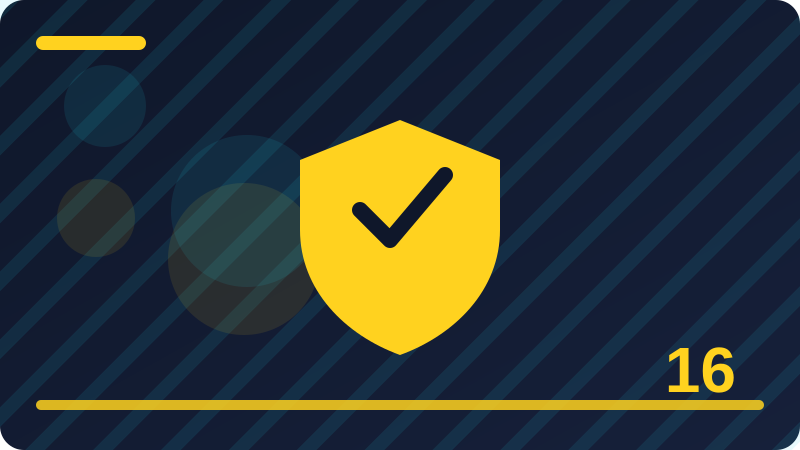

Chapter 16: Firewalls in Plain Words

Section 1: What a Firewall Really Is
A firewall is a guard that sits between your computer or network and the rest of the world, and it decides which network traffic is allowed in and which traffic is allowed out. Think of every message that travels over a network as a visitor arriving at a gate. The firewall checks each visitor against a list of rules, and only visitors that match an allowed rule are let through. Everything else is stopped at the gate, quietly, before it can reach the programs running on your device. This simple idea protects you from a huge amount of unwanted contact, because most attacks begin with an unsolicited connection attempt from somewhere on the internet. If nothing is listening for that attempt, and the firewall blocks it anyway, the attacker gets no foothold and no information about what is behind the wall. A firewall does not read your private files, and it does not judge whether a website is good or bad in a moral sense. It simply enforces rules about connections: who may connect, to what, and in which direction. That narrow job is exactly what makes it reliable, because it can be checked, tested, and understood without mystery. Your computer almost certainly already has a firewall built in, and your home router has one too, so you are usually protected by two layers before you even begin. The trouble starts when people turn firewalls off because a game or an app complains, or when they click "allow" on every prompt without reading it. A firewall is only as strong as its rules, and its rules are only as good as the choices you make when you set them up. Learning how firewalls think will help you make those choices calmly instead of guessing under pressure. In this chapter you will learn what firewalls do, how their rules work, where they sit, and how to keep them switched on and sensible. You do not need to become a network engineer. You need a clear mental picture, a few safe habits, and the confidence to say no to a prompt you do not understand. That picture starts here: a firewall is a gatekeeper for network traffic, and its job is to let the good traffic through and stop the rest. It helps to notice your firewall at work during an ordinary morning, because its quiet success is easy to miss. You open your browser and a page loads, you check your mail and new messages arrive, and an update downloads in the background, all while unsolicited knocks from the internet are being turned away without a single pop-up. That silence is not absence; it is the guard doing its job well. The next time you use your computer, pause for a moment and picture the gatekeeper sorting each connection, allowing your requests and their replies while refusing strangers. That mental picture turns an invisible tool into a trusted habit, and trusted habits are the ones people keep. Check: In your own words, what does a firewall check before it lets network traffic through?
Section 2: The Castle Wall Analogy
People often compare a firewall to the wall around a castle, and the comparison is useful as long as you do not push it too far. A castle wall has gates, guards, and rules about who may enter, and a firewall works in a similar way for network traffic. Your computer and your home network are the castle, the internet is the busy land outside, and the firewall is the wall with its guarded gates. Every program on your computer that talks to the network uses a gate called a port, and the firewall decides which gates stay open and which stay shut. A web browser needs a gate open to fetch pages, a video call needs gates for voice and video, and a file-sharing program might need a gate that you would rather keep closed. The wall does not make the people inside the castle automatically safe from every danger, just as a firewall does not stop you from downloading a harmful file yourself or typing your password into a fake website. The wall stops strangers from walking straight in uninvited, but it cannot stop a resident from inviting a thief inside or opening a secret tunnel. That is why firewalls work best as one layer among several, alongside updates, strong passwords, and careful habits. Another limit of the analogy is that a real castle wall is fixed stone, while a firewall is a set of rules that can change. When you install a new program, it may ask to open a gate, and when you join a new network, your firewall may change its posture. Understanding that the wall can change is important, because it means you should review its rules from time to time rather than assuming it is still set the way it was on day one. The analogy also helps explain why there can be more than one firewall. Your router guards the whole home network like an outer wall, while the firewall on each computer guards that single device like an inner wall. An attacker who somehow gets past the outer wall still faces the inner one. Layers like this are a core idea in defence: no single wall has to be perfect, because the next layer is waiting behind it. Keep the castle picture in mind, and remember its limits, and you will already understand firewalls better than most people. The castle picture also explains why defence works best in layers, which is worth pausing on. A castle did not rely on its wall alone; it had a moat, guards, a gatehouse, and an inner keep, so that a failure at one layer did not mean the loss of everything. Your computer works the same way, with the router wall outside, the computer firewall inside, and then updates, passwords, and careful habits behind them. If one layer is weakened, the next layer still stands, and that redundancy is deliberate. When you think about your own setup, ask not whether one wall is perfect, but whether several walls stand together, because layered defence forgives single mistakes in a way that no single wall ever can. Check: Where does the castle wall analogy break down, and why does that matter?
Section 3: Traffic Coming In and Going Out
Network traffic moves in two directions, and firewalls treat those directions differently, so it is worth getting them straight. Inbound traffic is traffic that starts outside and tries to reach your device, like a stranger knocking on your door. Outbound traffic is traffic that starts on your device and goes out, like you leaving the house to visit a shop. Most home firewalls are strict about inbound traffic and relaxed about outbound traffic, and there is a good reason for that. Your computer rarely needs to accept an unsolicited knock from the internet, but it constantly needs to reach out to websites, mail servers, and update servers. Blocking all inbound traffic by default therefore stops most random scanning and probing, while allowing outbound traffic keeps everyday work flowing. The exception is replies: when you visit a website, the website's reply is inbound traffic in a technical sense, but it is a reply to a request you made, so the firewall lets it through. Firewalls that remember conversations can tell the difference between a genuine reply and a brand new knock, and that memory is one of their most useful features. Outbound rules matter too, even though they are often looser. If a harmful program ever gets onto your computer, it will usually try to phone home to its operator, and a strict outbound rule could block that call. That is why some security-minded people also review outbound rules, especially for programs they do not recognise. For a beginner, the practical point is simple: do not allow inbound connections for a program unless you understand why it needs them. A music player does not need strangers to connect to it, a chat app usually does not either, and a game server is a special case where you deliberately choose to host something. When a firewall prompt asks about inbound access, pause and ask yourself whether you are hosting something or simply using something. Using usually needs no inbound permission, and saying no is the safe default. Direction is the first question a firewall asks about every connection, and it should be the first question you ask too. Direction also matters when you share something on purpose, and that case is worth thinking through carefully. Suppose you run a small file-sharing feature for your household, or you host a game for friends: now you genuinely want some inbound traffic, but only from the right people, on the right network, for the right time. That is a deliberate exception, not a general opening, and it should be as narrow as you can make it. When the sharing ends, the exception should end too, because an open door kept for convenience becomes a forgotten door. Asking about direction before every exception keeps you in control of who may enter, rather than leaving that decision to chance or to a program's default settings. Check: Why do most home firewalls block unsolicited inbound traffic but allow outbound traffic?
Section 4: Rules That Allow and Deny
A firewall is really a list of rules, and each rule says something like "allow this kind of traffic" or "deny that kind of traffic." When a connection attempt arrives, the firewall works through its rules in order until it finds one that matches, and then it follows that rule. If no rule matches, the firewall falls back to its default behaviour, which for a well-set-up firewall is to deny. This order matters, because a broad allow rule placed above a narrow deny rule can accidentally undo the deny. Imagine a rule that says "allow all traffic from the office network" sitting above a rule that says "deny traffic from one suspicious office computer." The first rule matches first, so the suspicious computer gets through despite the second rule. Good firewall management is therefore partly about ordering: specific rules first, general rules later, and a deny-all rule at the end as a safety net. Rules are usually described by a few ingredients: direction, source address, destination address, port number, and protocol. You do not need to memorise every ingredient today, but you should recognise that a rule is specific, not vague. "Allow web browsing" is a friendly description, while the actual rule underneath names ports and addresses. When you use a built-in firewall on your computer, the system writes most of these rules for you, and your job is mainly to approve or refuse new ones when programs ask. That is a manageable job if you slow down. Before you click allow, ask what the program does, whether it needs network access at all, and whether it needs inbound or only outbound access. If you are unsure, choose the narrower option or say no and see whether anything breaks. You can usually change your mind later through the firewall settings, so a cautious no is rarely permanent. Rules are also worth reviewing after you uninstall a program, because its rules sometimes linger. A tidy rule list is easier to understand and harder to trick, and understanding is the whole point. A firewall you understand is a firewall you can trust. Rules also deserve names and notes that a human can read, because a rule you cannot explain is a rule you cannot audit. When you create an exception, write down the program, the reason, and the date, even in a single line in a notebook or a phone note. Months later, that note will tell you whether the rule still earns its place, and it will help anyone else who shares the computer understand what was allowed and why. Good documentation is not bureaucracy; it is memory made visible. A firewall whose rules are documented is a firewall that a household or a small team can manage together, instead of a mystery that only one person understands and everyone else fears to touch. Check: Why does the order of firewall rules matter, and what should sit at the end of the list?
Section 5: Deny by Default
"Deny by default" is the single most important firewall principle, and it means that anything not explicitly allowed is blocked. It is the opposite of "allow by default," where everything is permitted unless someone remembered to block it. Allow by default sounds friendly, because nothing ever breaks, but it is dangerous, because every forgotten service, every new program, and every mistake becomes an open door. Deny by default sounds strict, but it is actually calmer in practice, because you only open the doors you need, one at a time, and you know exactly which doors are open. Think of it as a guest list at a party: with deny by default, only named guests enter, and everyone else is turned away politely. With allow by default, everyone enters except people on a banned list, and you must hope the banned list is complete, which it never is. Most modern operating systems and routers use deny by default for inbound traffic, which is why your computer is not instantly visible to every scanner on the internet. You can check this idea in your own life: if you have never opened a port on your router, strangers on the internet generally cannot connect directly to your computer, and that is deny by default doing its job. The principle also guides good decisions when you are asked to make an exception. An exception should be narrow: one program, one port if possible, one network type if possible, and for as long as needed. "Allow this program on all networks forever" is a broad exception, while "allow this program on private networks" is narrower and safer. If the program stops working without the exception, you learn something useful, and you can widen the exception deliberately rather than blindly. Deny by default also helps when you make mistakes, because a mistake usually results in something being blocked, which is noticeable and fixable, rather than something being exposed, which is silent and risky. Make deny by default your reflex, and most firewall decisions become easy: no rule, no entry, unless you have a good reason. Deny by default also protects you from your own future self, which is a benefit people rarely consider. You will install programs in a hurry, click through setup screens when tired, and agree to defaults you did not read, because everyone does these things sometimes. A deny-by-default firewall forgives those moments, because a program you installed carelessly still cannot open inbound doors on its own; it must ask, and you get a second chance to decide. An allow-by-default setup offers no such second chance, because the door is already open before you notice the mistake. Building a system that forgives ordinary human haste is wise, because haste is not a character flaw to be eliminated, it is a normal condition to be designed around. Check: Explain the difference between deny by default and allow by default using the guest list idea.
Section 6: Hardware Firewalls and Software Firewalls
Firewalls come in two broad forms, hardware and software, and most homes use both without realising it. A hardware firewall is a separate device, or a function built into a device like your router, that guards a whole network. It sits between your home network and the internet, and it checks traffic before it reaches any of your computers, phones, or smart devices. A software firewall runs as a program on a single device, guarding just that device, and it can make finer decisions because it knows which program is asking for access. Your router's firewall is the outer guard, and your computer's firewall is the inner guard, and together they form the layered defence you met earlier. Hardware firewalls are good at protecting devices that cannot protect themselves, such as a smart camera or an old printer with no firewall of its own. They guard the network boundary, so even a simple device behind them benefits. Their weakness is that they cannot see inside a device: once traffic is allowed into the network, the router firewall usually does not control which program on your computer receives it. Software firewalls fill that gap, because they know the program names and can ask you about them. They also protect a laptop when it leaves home and connects to a cafe network, where the router firewall belongs to someone else and may be weak or absent. That travelling protection is a strong reason never to turn off your computer's firewall. Businesses often use larger dedicated hardware firewalls with more rules, logging, and staff to manage them, but the idea is the same: guard the boundary, and guard each device too. For your own setup, the practical steps are simple. Keep your router's firewall switched on and its firmware updated, keep your computer's firewall switched on, and do not assume one replaces the other. If you ever hear someone say "I have a router, so I do not need a computer firewall," you now know why that is incomplete. The router guards the house, and the computer firewall guards the room, and you want both. Choosing between hardware and software protection becomes easier when you think about where your devices travel. A desktop computer that never leaves your home is well guarded by both layers working together, while a laptop that visits cafes, offices, and airports depends heavily on its software firewall, because the router it meets in each place belongs to someone else. That travelling laptop should never have its software firewall switched off, even briefly, because the next network it joins may be far less guarded than your home. If you look after a family, check the laptops that travel most, because they are the devices most likely to meet an untrusted network, and they are the ones whose inner guard matters most. Check: What does a software firewall protect that a router firewall cannot, and when does that matter most?
Section 7: The Firewall Built Into Your Computer
Every major operating system ships with a firewall, and for most people it is the only firewall they will ever need to touch. On Windows it is called Windows Defender Firewall, on macOS it is the built-in firewall in System Settings, and on Linux it is often a tool like UFW sitting in front of the kernel's filtering system. These firewalls are switched on by default in modern systems, they are maintained by the operating system maker, and they are designed for ordinary users rather than network engineers. That is good news, because it means your starting position is already strong. Your job is to keep it switched on, to answer its prompts carefully, and to check occasionally that it is still on after major updates or troubleshooting. Sometimes a support article or a game guide tells you to "disable your firewall" to fix a problem, and you should treat that advice with suspicion. Disabling the whole firewall to fix one program is like removing your front door because one guest cannot get in. The better fix is a narrow exception for that one program, or a check of whether the program genuinely needs inbound access at all. If you do temporarily turn a firewall off for a test, turn it back on immediately afterwards and note what you changed, so you do not forget. Checking your firewall status is a quick habit worth building. On Windows you can open the firewall settings and see whether it is on for private and public networks; on macOS you can look in Network settings; on Linux you can ask UFW for its status. You do not need to change advanced settings to benefit, and you should avoid copying complex rules from random internet posts unless you understand every line. The built-in firewall also works quietly with your antivirus and update systems, and it does not need a paid replacement for home use. Paid firewall products exist, and some add useful features, but they are not a requirement for safety. A built-in firewall that stays on, with careful answers to its prompts, beats an expensive firewall that was switched off in frustration. Start with what you already have, and learn it before you shop for more. Built-in firewalls also improve quietly through system updates, which is another reason to keep updates switched on. When the maker of your operating system fixes a flaw in its firewall, or improves how it explains prompts, that improvement arrives as an update, and a computer that postpones updates misses it. Treat firewall care and update care as one habit, not two separate chores, because they reinforce each other. A quick monthly check that covers both, firewall on and updates current, takes only a few minutes and catches the two most common forms of drift. If you help older relatives with their computers, this combined check is an ideal thing to do together, because it is simple, visible, and genuinely protective. Check: Why is disabling your whole firewall a poor fix for one program's connection problem?
Section 8: The Firewall in Your Router
Your router is the box that connects your home to the internet, and its firewall is the first guard any outside traffic meets. When someone on the internet tries to reach your home network, the router firewall checks the attempt and, by default, drops it unless you have deliberately set up a way in, such as port forwarding for a game server or a home camera. This is why you should never casually enable port forwarding or place a computer in a "DMZ" setting on your router: both actions punch holes through that first guard, and a DMZ in router language usually means exposing one device fully to the internet, which is rarely what a home user wants. The router firewall also works together with address translation, which hides your individual devices behind the router's single public address. Outsiders see the router, not your laptop directly, and that hiding adds a layer of obscurity, though it is not a substitute for real rules. Keeping the router firewall healthy is mostly about basic care. First, change the router's admin password from its factory default, because anyone who can log into the router can change its firewall rules. Second, keep the router's firmware updated, either through automatic updates or a manual check every few months. Third, do not enable remote administration from the internet unless you have a specific reason and understand the risk, because that feature lets the router be managed from outside your home. Fourth, review any port forwarding rules you have created, and delete ones you no longer use. Many people set up a rule for a game or a project, forget it, and leave a door open for years. A quick yearly review of your router settings, noting what is open and why, is a sensible habit. You do not need to become a router expert, and you should not copy advanced settings from strangers online. The default router firewall, with a strong admin password, current firmware, and no forgotten holes, already gives your whole household a strong outer wall. Treat it with the same respect as your front door, and check it occasionally. Router care also includes the people who share your home, because a router's settings affect everyone. If a housemate opens a port for a project and forgets it, or if a visitor is given the admin password for a quick fix, the whole household inherits the risk. Agreeing on a simple household rule, that router changes are noted and reviewed together, prevents most of these quiet exposures. It also helps when something breaks, because a shared note of what changed makes troubleshooting faster and less frustrating. Your router is shared infrastructure, like the plumbing or the electricity, and treating its settings as a shared responsibility is both fairer and safer than leaving them to whoever is most confident with technology. Check: Name two router settings that can weaken its firewall, and what you should do about each.
Section 9: Ports in Plain Words
A port is a numbered gate that network programs use to send and receive traffic, and understanding ports makes firewall rules much less mysterious. Your computer has thousands of numbered ports, from 0 to 65535, and each network service traditionally listens on a particular port, like a shop with a known street number. Web traffic usually uses port 80 for plain web pages and port 443 for encrypted web pages, mail uses ports like 25, 587, and 993 depending on the job, and remote desktop tools use their own well-known ports. When a firewall rule allows or blocks traffic, it often names a port, because that is the most practical way to say "this kind of service" without naming every program. An open port means a program on your device is listening there and the firewall permits traffic to reach it. A closed port means nothing is listening, or the firewall is blocking it, and from outside it simply looks unavailable. Attackers scan ports to find open ones, because an open port hints at a running service that might be old, misconfigured, or unprotected. That is why the goal for a home computer is to have as few open ports as possible, ideally none listening to the whole internet. You can think of ports like windows in a house: you want the windows you actually use, and you want the rest shut and locked. You do not need to memorise port numbers, but recognising the common ones helps you read firewall prompts and router settings without panic. Port 443 appearing in a rule is usually ordinary encrypted web traffic, while an unfamiliar high port for a program you do not recognise deserves a second look. Most importantly, never open a port on your router because a stranger in a forum told you to, and never run a service that listens to the internet unless you chose to host something and you keep it updated. Ports are just gates with numbers, and firewalls are the guards deciding which gates open. Once you see ports that way, firewall rules stop looking like code and start looking like common sense. Ports become friendlier once you connect them to programs you already know, rather than treating them as abstract numbers. Your browser's encrypted traffic, your mail app's secure collection, and your video call's media stream each use ports that are consistent enough to recognise, and recognising them turns a firewall prompt from a puzzle into a sentence. When a prompt names a program you trust and a port that fits its job, the decision is easy; when it names a program you do not know and a port that fits nothing you use, the decision is equally easy, but in the opposite direction. Building that familiarity takes no study, only attention to a few prompts over time, and that attention is the real skill behind reading firewall rules. Check: What does an open port mean, and why do attackers scan for open ports?
Section 10: Common Ports You Will Meet
You do not need to memorise a port table, but recognising the handful of ports you will actually meet makes firewall work calmer and less confusing. Port 80 carries plain, unencrypted web traffic, and port 443 carries encrypted web traffic, the kind you want for anything involving accounts or personal details. When you browse the web, your browser reaches out to port 443 on web servers, and that outbound traffic is normal. Port 25, 587, and 465 relate to sending mail, while ports 993 and 995 relate to collecting mail securely, and your mail app handles these quietly in the background. Port 53 carries domain name lookups, the system that turns names like example.com into addresses, and it is used constantly by every device. Port 22 is used by a remote administration tool called SSH, which is powerful and should never be open to the whole internet on a home computer unless you deliberately run a server and protect it strongly. Port 3389 is used by Windows Remote Desktop, and it is another one that should stay closed to strangers, because it is a direct doorway into controlling a computer. Ports above 49152 are often used temporarily by your own programs for outgoing connections, and seeing them in a log is usually not a cause for alarm. The practical lesson is not the numbers themselves but the habit of asking what a port is for before you allow it. If a firewall prompt mentions a port you do not recognise, you can search for it in a trusted reference, but do not let an unfamiliar number rush you into clicking allow. You can also compare the port with the program asking: a web browser asking about port 443 makes sense, while a simple photo viewer asking for inbound access on an unusual port does not. Keep a small note of any ports you deliberately open on your router, with the reason and the date, so future you can judge whether they are still needed. Common ports are the everyday vocabulary of firewalls, and learning the most frequent ones turns confusing prompts into readable sentences. That readability is the real skill, not the memorisation. Common ports are also useful when you read a router's settings or a program's help page, because those pages often mention ports without explaining them. Knowing that encrypted web traffic uses one familiar port lets you recognise ordinary browsing rules at a glance, while an unfamiliar port in a rule you did not create is a signal to pause and investigate. You can keep a tiny personal reference, just a few lines, of the ports you have deliberately opened and why, and that reference will save you from guessing during a future review. The goal is not to become a walking port directory, but to recognise the everyday ones and to treat the unfamiliar ones with respectful curiosity rather than blind trust. Check: Which two ports carry web traffic, and which one should you prefer for anything involving an account?
Section 11: Stateful Firewalls That Remember Conversations
A stateful firewall is a firewall with a memory, and that memory makes it much smarter than a simple filter that judges every packet in isolation. When your computer starts a conversation with a website, the stateful firewall notes the details: the addresses involved, the ports, and the direction of the first message. When the website replies, the firewall recognises the reply as part of a conversation you started, and it lets the reply through even though it is technically inbound traffic. Without that memory, the firewall would face an awkward choice: either block all inbound traffic including genuine replies, which would break web browsing, or allow all inbound traffic, which would invite strangers in. Memory solves the dilemma neatly, because the firewall can be strict about brand new connections while remaining welcoming to replies. This is why your web browsing works smoothly behind a firewall that blocks unsolicited inbound traffic: the replies are not treated as strangers, they are treated as answers. Stateful inspection also helps the firewall spot nonsense, such as a reply that claims to belong to a conversation that never started, or a packet that arrives out of order in a way that does not fit the conversation's state. Such packets can be dropped quietly, because they do not match any conversation the firewall remembers. Older, stateless firewalls judged each packet alone against fixed rules, which was simpler but cruder, and most modern firewalls are stateful because the extra intelligence is worth it. For you as a user, the practical point is reassuring: you do not need to open inbound ports just to browse the web, read mail, or stream video, because those activities start outbound and their replies are remembered. If a program asks for an inbound rule but its job is only to fetch things, like a browser or a news app, be suspicious of the request, because a stateful firewall already handles its replies. Stateful firewalls are one of those quiet improvements that make modern computing both safer and easier, and they explain a behaviour that otherwise looks like magic: strict on strangers, smooth for conversations you began yourself. Remember that memory has limits too, because a firewall can only track so many conversations at once, and floods of fake conversations can strain it, which is one reason large networks add extra protections. For home use, though, stateful filtering is simply the normal, sensible default, and it is already working for you. Stateful memory also explains why some connections survive brief network hiccups while others do not, which is a detail users sometimes notice without understanding. When a conversation is remembered, a short interruption may be tolerated, but when the firewall's memory of a conversation expires or the network changes, a fresh connection must be started, and that fresh start is judged as a new knock. This is normal behaviour, not a fault, and it is one reason a video call may need to reconnect after you switch networks. Understanding that the firewall's memory is tied to conversations helps you interpret these everyday events calmly, instead of assuming something is broken or, worse, switching protection off to force a connection through. Check: How does a stateful firewall tell a genuine reply apart from an unsolicited connection attempt?
Section 12: Packet Filtering in Plain Words
Packet filtering is the most basic firewall technique, and it works by examining each small piece of network data, called a packet, and deciding whether to allow it or drop it based on simple facts written on the packet itself. Those facts include the source address, the destination address, the port numbers, and the protocol, which is roughly the language the packet speaks. A packet filter does not open the packet to read your message or your password; it reads the envelope, not the letter, and it makes a fast yes-or-no decision from that envelope. This speed is its strength: packet filters can handle huge amounts of traffic without slowing a network noticeably, which is why they sit in routers and at network boundaries everywhere. Its weakness is that it cannot judge context very well on its own. A packet that looks perfectly ordinary on the outside might carry something harmful inside, and a basic packet filter would wave it through if the envelope matched an allowed rule. That is why packet filtering is usually combined with stateful tracking, which adds memory, and with other protections like antivirus software and careful browsing habits, which judge content rather than envelopes. You can picture packet filtering as a bouncer who checks invitations at the door without searching bags: fast, useful, and not the whole security plan. In practice, the packet filter rules on your home router quietly drop the constant background scanning that hits every internet address, and that dropping is why your computer is not overwhelmed by random knocks. When you create a firewall rule that mentions an address or a port, you are writing a packet filter rule, even if the software dresses it up in friendly language. Understanding this helps you read rules sensibly: a rule that allows a port allows every packet addressed to that port that passes the other checks, so it should be as narrow as you can make it. Packet filtering is not glamorous, but it is the foundation under almost every firewall you will meet, and respecting its limits keeps you from expecting one tool to do every job. A good defender layers packet filtering with state, with application awareness, and with human caution, and that combination is far stronger than any single technique alone. Packet filtering is also the reason internet background noise rarely reaches your programs, which is worth appreciating. Automated scanners constantly send packets to addresses across the internet, testing for open services, and packet filters drop the vast majority of them before any program on your computer ever sees them. Without that filtering, every program would have to defend itself against constant probing, and many would fail. The filter's speed matters here, because it must judge millions of packets without slowing your browsing or your calls, and it achieves that speed precisely by reading envelopes rather than letters. That trade-off, speed for depth, is sensible at the boundary, as long as deeper checks happen elsewhere in your layered defence. Check: What information does a packet filter read, and what does it deliberately not read?
Section 13: Application Firewalls That Know Your Programs
An application firewall goes one step further than a packet filter, because it understands which program is sending or receiving the traffic, and sometimes even what kind of application activity is happening. A packet filter sees addresses and ports, but an application firewall sees that your web browser is asking, or that a new program you just installed is asking, and it can apply rules per program rather than per port. This matters because two different programs can use the same port for different purposes, and a port rule alone cannot tell them apart. When your computer's firewall pops up and asks, "Do you want to allow this app to communicate on networks?" that prompt is application firewall behaviour: it is asking about a named program, not just a number. That naming is a gift, because it lets you make decisions in human terms. You can allow your browser and your mail app, and refuse a program you do not recognise, even if both wanted the same port. Some application firewalls also understand application protocols, so they can tell ordinary web browsing from an attempt to smuggle a different kind of traffic through a web port, and they can block the smuggling while allowing the browsing. On larger networks, application firewalls help enforce policies like "only approved chat tools may be used," though for home use the per-program prompt is the main experience. The risk with application prompts is prompt fatigue: if you see too many, you start clicking allow without reading, and the firewall's intelligence is wasted. Reduce that fatigue by installing software only from sources you trust, so most prompts come from programs you actually chose. When a prompt does appear for an unknown program, treat it as a small investigation, not an interruption: what is this program, when did it arrive, and does its job genuinely need network access? A calculator does not need the internet, a photo editor usually does not need inbound access, and a game that only plays offline does not need either. Application awareness turns firewall decisions from abstract numbers into concrete questions about programs you know, and that concreteness is exactly what a beginner needs to make good choices consistently. Application awareness also helps when two programs behave differently but use similar network patterns, which is a common source of confusion. A browser fetching a page and a background updater fetching a patch may look alike to a packet filter, but an application firewall knows which program is which, and it can apply your decisions per program. That precision lets you allow the updater while questioning an unfamiliar program, even though both wanted similar access. It also means that renaming a program does not fool a good application firewall, because it identifies programs by more than their displayed name. For you, the practical benefit is decisions in plain language: allow this app, block that app, rather than allow this number, block that number. Check: Why is a rule about a named program more useful than a rule about a port number alone?
Section 14: Next-Generation Firewalls in Simple Terms
You may hear the phrase "next-generation firewall" in product advertising and workplace discussions, and it is worth knowing what it usually means without being impressed by the label alone. A next-generation firewall, often shortened to NGFW, is a firewall that combines traditional packet filtering and stateful tracking with extra features, such as recognising applications, inspecting traffic more deeply, and connecting to threat intelligence about known harmful addresses and patterns. In plain words, it is a firewall that knows more and checks more before deciding. Where a basic firewall might only check the envelope, a next-generation firewall may also look for signs of known attacks inside the traffic, block connections to addresses reported as malicious, and enforce rules like "this user may use this application but not that one." These features are genuinely useful on business networks, where many users, many applications, and many threats meet, and where a dedicated team manages the rules. For a home user, though, the label is less important than the basics: your built-in firewall and router firewall already cover the core job, and a product calling itself next-generation does not automatically make you safer if you switch it off or click allow on everything. Extra inspection also has trade-offs, because deeper inspection takes more processing power and, in some setups, involves decrypting traffic, which raises privacy questions that deserve honest answers from the vendor. The sensible way to judge any firewall product is by asking plain questions: does it stay on by default, does it explain its prompts clearly, does it update itself, does it log its decisions, and does it respect deny by default? If the answers are good, the product is worth considering, whatever its marketing name. If the answers are vague, the fancy label is not a reason to buy. Next-generation firewalls show where the field is heading, toward firewalls that understand applications and context rather than just addresses, but the principles you have already learned still govern them. Rules, order, default deny, and careful prompts matter just as much in a next-generation firewall as in a simple one, and a user who understands those principles can judge any product on the market calmly. Next-generation features also raise a fair question about who watches the watcher, because a firewall that inspects traffic more deeply necessarily sees more of it. A reputable product should explain plainly what it inspects, what it stores, and for how long, and it should let you turn off features you do not want. If a product's explanations are vague, or if it asks you to trust it without saying what it does with your traffic, that vagueness is itself an answer, and you should prefer a product that explains itself. Powerful tools deserve clear explanations, and a buyer who insists on them helps the whole market become more honest. Judge next-generation claims by their explanations, not by their adjectives. Check: What extra abilities does a next-generation firewall add, and what questions should you ask before trusting its label?
Section 15: Firewalls Are Not Antivirus
Beginners often confuse firewalls with antivirus software, because both are security tools that run quietly and both sometimes pop up warnings, but they do different jobs, and you need both. A firewall guards network traffic: it decides which connections may enter or leave your device, based on rules about addresses, ports, programs, and direction. Antivirus guards files and programs: it examines files you download, programs you run, and behaviour on your device, looking for known malware and suspicious actions. A firewall can stop a stranger from connecting to your computer, but it will not stop you from downloading a harmful attachment yourself, because you initiated that download and the firewall sees it as your own outbound request with a reply. Antivirus, by contrast, can examine that attachment and warn you before you open it, because its job is content, not connections. Similarly, antivirus cannot stop a network scanner from probing your open ports, because probing is traffic, not a file, and that is the firewall's job. The two tools overlap a little at the edges, especially in security suites that bundle them together, but the core distinction holds and it explains why turning off one because you have the other is a mistake. Think of the firewall as the guard at the gate and antivirus as the inspector inside the building who checks packages and watches behaviour. A building with a guard but no inspector is vulnerable to a harmful package carried in by a resident, and a building with an inspector but no guard is vulnerable to strangers walking in freely. You want both, plus updates and backups, because each layer catches what the others miss. When a security suite offers both, keep both switched on, and when you troubleshoot a problem, resist the urge to disable everything at once. Disable one thing, test, and re-enable it, so you learn which tool was involved. Understanding that firewalls and antivirus are partners, not substitutes, prevents one of the most common beginner errors, and it gives you a clear answer whenever someone suggests you only need one of them. The firewall-antivirus partnership also shows up in security software bundles, where both tools share information to make better decisions. A firewall may learn from antivirus that a program is suspicious and block its network access, while antivirus may learn from the firewall that a program is contacting a known harmful address and examine it more closely. This cooperation is useful, but it does not change the core distinction: one guards connections, the other guards files and behaviour. Keeping both switched on lets them help each other, while switching one off weakens the partnership. If you ever troubleshoot a problem, disable one tool at a time and re-enable it promptly, so you learn which partner was involved without leaving the building unguarded. Check: Give one attack a firewall stops that antivirus would miss, and one that antivirus stops that a firewall would miss.
Section 16: Turning Your Firewall On and Checking It
Knowing that a firewall exists is not enough; you should be able to confirm that yours is actually on, and that check takes less than a minute once you know where to look. On a Windows computer, open Settings, go to Privacy and security, then Windows Security, then Firewall and network protection, and you will see whether the firewall is on for domain, private, and public networks, with a green tick when all is well. On a Mac, open System Settings, choose Network, then Firewall, and confirm it is switched on. On a Linux computer with UFW, you can open a terminal on your own machine and run a status command, which simply reports whether the firewall is active and lists its rules. The exact clicks change with each system version, but the idea never changes: find the firewall screen, confirm it says on, and leave it on. If you ever find it off and you did not turn it off, treat that as a warning sign worth investigating rather than a mystery to ignore. Ask yourself whether a program, a helper, or a troubleshooting step switched it off, turn it back on, and check again after a restart to make sure it stays on. Some people worry that checking means changing advanced settings, but a status check changes nothing; it only looks. Make this check part of a small routine, perhaps once a month, alongside checking that updates are current and backups are running. You can also practise reading the firewall screen without fear: the words "private network" and "public network" refer to how much you trust the network you are on, not to whether your data is private in some absolute sense. Your home network is usually private, a cafe network is public, and the firewall is stricter on public networks. If a prompt ever asks which kind of network you are on, answer honestly, because that answer shapes how strict the firewall will be. A firewall that is on and checked beats a firewall that is assumed to be on, and the difference is one minute of calm looking. Checking your firewall is also a good moment to check who else uses the computer, because a shared machine carries shared decisions. An allowed program that one person added affects every user of that machine, and a firewall switched off by one person leaves everyone unprotected. On a family computer, a short conversation about who may answer firewall prompts, and an agreement that children fetch an adult for unfamiliar ones, prevents most shared-machine problems. If your computer supports separate user accounts, using them is a simple way to limit who can change firewall settings, because administrative changes then require an administrator's approval. Shared machines need shared rules, and a firewall check is a natural moment to agree them. Check: Where would you look on your own computer to confirm your firewall is switched on?
Section 17: Answering Firewall Prompts Safely
Firewall prompts are the moments when your firewall asks you to make a decision, and handling them well is a genuine security skill. A typical prompt names a program, says it wants to communicate on networks, and offers choices like allow or block, sometimes split by private and public networks. The worst habit is clicking allow instantly to make the box disappear, because that habit trains you to approve things you have not understood. The best habit is a short pause with three questions. First, do I recognise this program, and did I install it deliberately? Second, does its job need network access, and does it need inbound access or only outbound? Third, which networks does it need: only my trusted home network, or also public networks? If you recognise the program and its job clearly needs the access, allowing it on private networks is usually reasonable. If you do not recognise the program, block it and investigate afterwards; blocking rarely breaks anything permanently, and you can allow it later once you know what it is. If the program is a game or a tool that hosts something, such as a multiplayer server you deliberately run, then inbound access may be genuine, but it should still be limited to the networks where you actually host. Be especially careful with prompts that appear right after installing something from an unfamiliar source, or prompts for programs with vague names, because malware often relies on a quick allow to open its own door. Also watch for prompts that ask for public network access when private would do: a home media server does not need to be reachable from a cafe network. If you make a wrong choice, do not panic; firewall decisions can be changed in the firewall settings, where allowed programs are listed and can be removed or edited. The goal is not to never click allow, but to click allow deliberately, for a program you know, for a reason you can state. That deliberateness is the difference between a firewall that protects you and a firewall that merely decorates your screen. Prompt fatigue is a real risk, and the best defence against it is reducing the number of prompts you meet, not ignoring them. Installing software only from trusted sources, uninstalling programs you no longer use, and keeping your system tidy all reduce the stream of unfamiliar prompts, so the ones that remain stand out and get your full attention. If you find yourself facing many prompts in a week, treat that as information: something is installing programs, or a program is unusually chatty, and either case deserves a look. A quiet firewall is usually a healthy sign, because it means your programs are settled and your permissions are stable. When a new prompt breaks that quiet, give it the attention its rarity deserves. Check: What three questions should you ask yourself before clicking allow on a firewall prompt?
Section 18: Allowing One Program the Safe Way
Sooner or later a program you genuinely use will need firewall permission, and allowing it the safe way means giving it the narrowest permission that lets it work. Start by confirming the program's identity: check its name, its publisher if shown, and whether you installed it yourself from a trusted source. Then decide the direction: most programs only need outbound access to fetch data, and if the firewall prompt is about inbound access, ask whether the program hosts something, such as a server, a shared folder, or a multiplayer game. If it does not host anything, inbound access is probably unnecessary, and you should not grant it just because the prompt appeared. Next, decide the network scope: private networks, meaning your trusted home or office network, are narrower than public networks, and a program that only serves your household should be allowed on private networks only. Then test: allow the narrow permission, try the program, and see whether it works. If it works, you are done, and you have avoided a broader hole. If it does not work, widen the permission one step at a time, checking after each step, rather than jumping straight to "allow everywhere." Keep a small note of exceptions you create, especially for programs you allowed months ago, because a list you can review is a list you can clean up. When you uninstall a program, remove its firewall exception too, so old rules do not linger like spare keys. On a shared family computer, remember that allowing a program affects every user of that computer, so a game one child hosts could expose the whole machine, and that decision deserves a household conversation. The safe way is slower than clicking allow on everything, but only by seconds, and those seconds buy you a firewall whose rules you can explain. A rule you can explain is a rule you can defend, and a firewall full of explainable rules is a strong firewall. Practise this narrow-first approach a few times, and it becomes automatic, which is exactly what a good security habit should be. Allowing a program safely also means revisiting the permission later, because needs change and programs change. A program that needed inbound access for a feature you used last year may not need it now, and a program that was trustworthy when you installed it may have changed owners or behaviour since. A brief review every few months, asking whether each allowed program still needs its permission, keeps your exceptions honest. If you hesitate over a program, you can narrow its permission first, for example to private networks only, and see whether anything breaks, rather than removing it outright. Narrowing is a gentle test that often answers the question for you, without drama or risk. Check: What does "narrowest permission that lets it work" mean in practice for a new program?
Section 19: Private Networks, Public Networks, and Profiles
Firewalls use network profiles to adjust their strictness based on how much you trust the network you are on, and understanding profiles prevents both danger and frustration. A private network profile is for networks you control and trust, like your home network, where your own devices live and where you might share files or a printer. A public network profile is for networks you do not control, like a cafe, hotel, or airport network, where strangers share the same network and you should assume less trust. A domain profile exists on workplace networks managed centrally, and most home users will rarely need to think about it. When your firewall is set to a public profile, it is stricter: it blocks more inbound traffic, it does not advertise your computer to other devices, and it is less willing to share. When it is set to private, it relaxes some of those blocks so home sharing can work. The danger comes from mislabelling: if you mark a cafe network as private because the prompt was confusing, your computer may become more visible and more sharing-friendly in exactly the place where it should be quiet. The frustration comes from the opposite mistake: marking your home network as public and then wondering why file sharing or printing stops working. The fix in both cases is to check the profile when you join a network and to change it deliberately if it is wrong. On Windows you choose this when you connect, and you can change it later in network settings; on a Mac the firewall does not use identical labels, but the same idea of trusting a network applies to sharing settings. A good rule is to default to public whenever you are unsure, because public is the safer mistake: it may block a convenience, but it does not expose you. You can always relax a public profile later once you confirm you are home. Profiles are a simple idea with real power, because they let one firewall behave sensibly in two very different worlds, the trusted living room and the untrusted street. Learn to answer the "what kind of network is this?" question honestly, and your firewall will do the rest. Network profiles also interact with sharing features beyond the firewall, such as file sharing and printer sharing, which is why a profile change can have visible side effects. Marking a network as private may enable sharing that you wanted at home but not in a cafe, while marking it as public disables sharing that you wanted at home. If sharing stops working after a network change, check the profile before assuming a device is broken, because the profile is a common and fixable cause. Conversely, if you notice your computer advertising itself to strangers on a public network, check the profile immediately, because a mistaken private label is a likely explanation. Profiles are small settings with large effects, and they reward a moment of attention at connection time. Check: Why is mistakenly marking a cafe network as private more dangerous than the opposite mistake?
Section 20: Inbound Rules, Outbound Rules, and Why Both Matter
You have already met inbound and outbound traffic, and now it is time to see them as two separate rule lists that deserve separate attention. Inbound rules govern traffic that starts outside and tries to reach your device, and for home users these rules are the critical ones, because they decide whether strangers can knock and enter. A good inbound list is short: a few deliberate exceptions for things you host, and a deny-all default behind them. Outbound rules govern traffic that starts on your device and goes out, and these rules are often looser by default, because your programs constantly need to reach websites, mail servers, and update servers. That looseness is convenient, but it has a cost: if a harmful program ever runs on your computer, loose outbound rules let it phone home, download more harmful code, or send out stolen data. Stricter outbound rules could block those calls, which is why security-minded users and businesses pay attention to outbound rules too. For a beginner, the practical balance is this: keep inbound rules strict and review them regularly, and for outbound rules, pay attention to unfamiliar programs rather than trying to lock down every program at once. If your firewall ever alerts you that an unknown program is trying to connect out, that alert is valuable information, not noise, and blocking it until you investigate is the right move. Some firewalls let you create outbound rules per program, and using that feature for programs that should never need the internet, like a simple offline tool, is a sensible extra step. It is also worth knowing that outbound rules can break things if applied carelessly: blocking your browser's outbound access breaks browsing, and blocking an update service's outbound access stops updates. As with inbound rules, change one thing at a time and test, so you know what caused any problem. Both directions matter because defence is about controlling contact in both directions, not just building a wall against strangers. A firewall that watches the door in and the door out gives you a fuller picture of your computer's conversations, and that fuller picture is what turns a simple guard into a genuinely watchful one. Inbound and outbound rules together give you a fuller picture of your computer's social life, which is a useful way to think about them. Inbound rules describe who may visit you, while outbound rules describe who you visit, and a computer with many unexplained visitors in either direction deserves attention. Reviewing both lists occasionally, even briefly, teaches you which programs are sociable and which are quiet, and that knowledge makes future prompts easier to judge. If a program you thought was quiet suddenly appears in the outbound list, that change is worth a question, just as an unexpected inbound rule would be. Knowing your computer's normal social pattern is the foundation of spotting abnormal behaviour, and firewall rules are where that pattern is written down. Check: Why might a security-minded user care about outbound rules even though inbound rules get more attention?
Section 21: Firewall Logs and What They Quietly Record
A firewall log is a diary of the decisions your firewall has made, and learning to glance at it occasionally turns an invisible guard into a visible one. Every time the firewall blocks or allows a connection, it can write a short entry noting the time, the direction, the addresses involved, the port, and whether the traffic was allowed or dropped. Nobody expects you to read this diary line by line every day, because on a busy network it can grow very long, very fast, and most of its entries are routine background noise from the internet's constant scanning. The value of the log is not in reading every line, but in knowing it exists and in being able to look at it when something seems wrong. Suppose a program stops working after you change a rule: the log can show you whether the firewall blocked it and on which port, which turns a vague mystery into a specific fix. Suppose you notice your computer behaving strangely: the log can show whether an unfamiliar program has been making many outbound connections, which is a useful clue to take to a trusted helper or to your antivirus scan. Suppose you are simply curious about how much probing your home network receives: a quick look at a router log often reveals a surprising number of blocked attempts from addresses all over the world, and that sight usually strengthens a person's resolve to keep the firewall on. Logs also matter after an incident, because they provide a timeline: what connected, when, and from where, which helps defenders understand what happened instead of guessing. For home users, the practical habit is modest: find out where your firewall log lives, look at a small sample so the format feels familiar, and leave detailed log analysis to professionals unless you enjoy it. Do not be alarmed by large numbers of blocked entries, because blocking is the firewall doing its job, and a high count of blocked attempts is normal for any device connected to the internet. Be more interested in patterns that are new or unusual, such as a single address trying many ports in a short time, or a program you do not recognise appearing repeatedly. Logs reward calm curiosity, not panic, and a firewall that writes a log is a firewall you can audit, question, and trust with evidence rather than faith. Logs become more valuable when you compare them over time, rather than reading them as isolated events. A single blocked scan means little, but a sudden increase in blocked attempts after you opened a port means a great deal, because it shows the consequence of a change you made. Keeping a brief note of your test results and your rule changes lets you make those comparisons, and it turns a log from a pile of lines into a story about your network. Even a few dated notes, kept in a notebook or a phone note, are enough to reveal patterns that would otherwise pass unnoticed. The habit of comparing, not just glancing, is what turns logging from a technical feature into a personal early-warning system. Check: What are two practical situations where glancing at a firewall log would actually help you?
Section 22: Reading a Log Entry Without Fear
A firewall log entry can look intimidating at first, because it is a dense line of addresses, numbers, and abbreviations, but each entry is really a short sentence once you know its parts. A typical entry begins with a date and time, so you know when the event happened, and then it says whether the traffic was allowed or dropped, which is the firewall's decision in one word. Next comes the direction, inbound or outbound, which tells you whether the traffic was knocking from outside or leaving from inside. Then come two addresses: the source, where the traffic came from, and the destination, where it was going, and one of those addresses will usually be your own device or your router. Then comes the port number, which tells you which gate was involved, and the protocol, which tells you the general kind of traffic. Reading an entry is therefore a matter of translating those pieces in order: at this time, this traffic, from this address, to that address, on this port, was allowed or dropped. Try it with a made-up example in your head: an entry that says a packet was dropped, inbound, from an unfamiliar outside address, to your computer, on a remote-access port, is a stranger being turned away from a sensitive door, and that is reassuring rather than alarming. An entry that says a connection was allowed, outbound, from your browser, to a familiar web address, on the encrypted web port, is ordinary browsing, and it needs no action. The entries that deserve a second look are the ones that break the pattern: an unknown program connecting outbound at an odd hour, repeated attempts against many ports from one address, or allowed inbound traffic to a service you did not intend to host. You do not need to understand every abbreviation to spot those patterns, and you can look up unfamiliar terms in a trusted reference when you need to. Most home firewall logs are also filtered views in a settings screen, with columns and search boxes that make reading easier than raw text files. Practise reading five entries slowly, translating each one into a plain sentence, and the fear fades quickly. A log is not a test you must pass; it is a record you can consult, and the skill is simply knowing how to turn one line into one sentence about what happened. Reading log entries also becomes easier when you practise with entries you generate yourself, which is a safe and instructive exercise. Visit a website on your own computer, then look at the log and find the entries that correspond to that visit, translating each one into a plain sentence about what happened. Then block a program deliberately, try to use it, and find the dropped entries it produced, so you learn what a block looks like as well as what an allowance looks like. This hands-on practice, done entirely on your own systems, builds familiarity faster than any amount of reading about logs. After a few such exercises, the log stops looking like code and starts looking like a diary you can read. Check: Translate a log entry into plain words: what five pieces of information does it give you?
Section 23: When the Firewall Blocks Something You Wanted
Almost everyone meets a moment when the firewall blocks something legitimate, and handling it calmly is part of living with a firewall rather than a sign that the firewall is broken. A game may fail to connect, a video call may drop, a printer may refuse to appear, or a file-sharing feature may stop working, and the firewall is a reasonable suspect, but it is not the only suspect. Before changing any rule, check the simpler explanations: is the program itself running, is the network connected, is the other device switched on, and does the feature work when both devices are on the same trusted network? If the answer points to the firewall, look at its log or its list of blocked programs, because the firewall often records exactly what it stopped and why. The fix should be as narrow as the problem: allow the specific program, on the specific network type, rather than switching the whole firewall off. If a game needs inbound access only while you host a match, consider allowing it only on your private network, and remember to review that permission later. If a printer needs access, check whether the printer maker's own setup guide names the program and the network type it needs, because reputable guides describe this clearly. Resist guides, forum posts, and well-meaning friends who tell you to disable the firewall entirely or to open a wide range of ports, because those fixes trade a small inconvenience for a large exposure, and they often hide the real cause of the problem. Also remember that a firewall is not always the culprit: a program may be blocked by the other device's firewall, by the router, by a VPN, or by the service itself being down, and changing your own rules will not fix those. Test one change at a time, and undo a change that does not help, so your rule list stays clean and understandable. Keep a note of what you changed and why, even a single line in a notebook, because future you will be grateful when reviewing old rules. A blocked legitimate program is an annoyance, not an emergency, and the calm response is to investigate narrowly, fix narrowly, and keep the guard on duty while you do it. A blocked program also offers a chance to learn whether you actually need the feature that is blocked, which is a question worth asking honestly. Sometimes a feature that fails behind a firewall is one you rarely use, and the simplest fix is to accept the block and use an alternative, rather than opening a door for a feature of marginal value. Sometimes the feature matters greatly, and then a narrow exception is justified and worth documenting. Distinguishing those two cases saves you from opening doors for conveniences you barely miss, and it keeps your rule list focused on what genuinely matters. Every blocked feature is therefore a small decision about value, not just a technical problem to be eliminated at any cost. Check: What should you check before you change a firewall rule for a program that stopped working?
Section 24: Testing Your Own Firewall Safely
You can test your own firewall's strength without attacking anyone, because there are legitimate, safe services designed exactly for that purpose, and using them teaches you more than any amount of theory. The key rule is that you only test systems you own or have explicit permission to test, and you only use reputable testing services that scan your own public address with your consent. One well-known approach is a port-scanning test website that probes your internet address from outside and reports which ports, if any, appear open, closed, or hidden. Running such a test on your own home connection is a defensive check, like checking whether your doors are locked by trying the handles yourself. If the test reports that all common ports are hidden or closed, your outer firewall is doing its job, and that result is worth celebrating quietly. If it reports an open port you did not expect, do not panic: note the port number, check which program or router rule opened it, and close it or narrow it if it is not needed. You can also test your computer's firewall from inside your own home network using tools on your own devices, but keep this strictly to your own network and your own machines, and never scan a neighbour's network, a workplace network without permission, or any public system. Another safe test is simpler and needs no tool at all: try to reach a service you host from outside your network only if you deliberately set it up, and confirm that it is reachable only in the way you intended. Testing also includes the boring checks that matter most: confirming the firewall is on, confirming the network profile is correct, and confirming that old rules have been removed. Write down your test results and the date, so you can compare next time and notice changes. Safe testing builds real confidence, because it replaces "I think I am protected" with "I checked, and here is what I found." That evidence-based confidence is the mindset of a defender, and it grows naturally from small, careful, permission-respecting checks on your own systems. Testing your firewall also teaches you to think like an auditor, which is a mindset that transfers to every other layer of defence. An auditor does not assume a guard is working; an auditor checks, records the result, and compares it with the previous check. Applying that mindset to updates, backups, and passwords turns vague confidence into evidence, and evidence into calm. You do not need professional tools or training to audit at home; you need a checklist, a notebook, and the willingness to look. Each small check you perform makes the next one easier, because familiarity grows, and each note you keep makes the next comparison sharper. Auditing is a habit of attention, and attention is the cheapest security tool you own. Check: What is the one rule that makes a firewall test safe and legitimate, and what should you do if a test finds an unexpected open port?
Section 25: Firewalls and Virtual Private Networks
Firewalls and virtual private networks, usually called VPNs, are often mentioned together, and it helps to see them as partners with different jobs rather than as rivals. A firewall controls which connections are allowed in and out, while a VPN creates an encrypted tunnel for your traffic across an untrusted network, hiding its contents and its destination from local observers. When you use a VPN, your traffic travels inside that tunnel to the VPN server, and from there it continues to its destination, which means the local network's firewall and observers see the tunnel but not the details inside it. Your own computer's firewall still applies, because it guards your device regardless of the tunnel, and it still decides which programs may send traffic, including traffic that will travel through the VPN. A common point of confusion is the VPN's kill switch, which is a firewall-like feature: if the VPN connection drops, the kill switch blocks all traffic so your data does not suddenly travel unprotected, and that blocking is a firewall rule doing a protective job. Another point of confusion is ordering: the VPN does not replace your firewall, and the firewall does not replace the VPN, because one governs permission and the other governs privacy on the journey. If you use a VPN for remote work or on public Wi-Fi, keep your firewall on exactly as before, and answer its prompts just as carefully, because the tunnel does not make a malicious program safe. Some workplaces combine the two deliberately, requiring a VPN connection and a firewall profile that only allows work traffic while connected, and that combination shows how the tools complement each other. For home users, the practical advice is simple: choose a reputable VPN only if you have a reason to use one, keep your firewall switched on before, during, and after VPN use, and do not treat either tool as a substitute for the other. Together they cover two different risks, the risk of unwanted contact and the risk of exposed traffic, and covering both risks is better than covering one twice. VPNs and firewalls together also illustrate a broader lesson about tools that sound similar but solve different problems. Beginners often buy one tool expecting it to solve every problem, and then feel betrayed when it does not, while experienced defenders collect tools that each solve one problem well. A VPN solves the problem of exposed traffic on an untrusted network, a firewall solves the problem of unwanted contact, and neither solves the problem of a weak password or a missing backup. Learning to match each tool to its problem prevents disappointment and wasted money, and it helps you explain security to others without exaggeration. The right question is never which single tool is best, but which combination of tools covers the risks you actually face. Check: How do a firewall and a VPN differ, and why does using a VPN not mean you can switch your firewall off?
Section 26: Your Router, Address Translation, and Hidden Devices
Your router does more than connect you to the internet; it also hides your devices behind a technique called network address translation, often shortened to NAT, and understanding it explains why your home network behaves the way it does. Every device on the internet needs an address, but there are not enough public addresses for every device in every home, so your router uses one public address for the whole household and gives each device inside a private address that only works within your home. When your laptop visits a website, the router notes the request, swaps the private address for its public one, and when the reply comes back, it swaps it back and delivers it to the right device. From outside, only the router is visible, and your individual devices are hidden behind it, which is a useful layer of obscurity. NAT is not a firewall, though, and it is important not to confuse hiding with protecting. NAT hides devices because outsiders cannot directly address them, but a firewall actively enforces rules about what is allowed, and the two work best together. The router's firewall provides the rules, while NAT provides the hiding, and neither alone is a complete defence. This combination is also why port forwarding is a deliberate act: forwarding tells the router to send traffic arriving on a particular port straight to a particular device inside, bypassing the usual hiding, and that is why forwarded ports deserve care and review. Another consequence of NAT is that two homes can use the same private addresses without conflict, because those addresses never travel beyond each router. If you ever look at your computer's network settings and see an address starting with 192.168 or 10, that is a private address, and it is a sign that NAT is at work. Knowing this helps you read router settings calmly and understand why a device that works fine at home may need deliberate configuration to be reachable from outside. Hiding plus rules is a strong combination, and your router provides both, as long as you keep its password strong and its firmware current. Private addresses are also a useful clue when you troubleshoot your own network, because they tell you where you are in the chain. If your computer's address starts with one of the private ranges, you know a router stands between you and the internet, and that router's firewall is your outer guard. If a device somehow shows a public address directly, it may be connected without that guard, and that difference is worth understanding before you change anything. You do not need to memorise address ranges to benefit from this clue; recognising that your home addresses look private is enough to confirm that the normal hiding is in place. A quick glance at network settings, done occasionally, can therefore confirm a layer of protection without any special tool. Check: What is the difference between NAT hiding your devices and a firewall protecting them?
Section 27: Setting Up a Home Router Firewall Well
Setting up a home router firewall well is mostly a short checklist of sensible defaults, not an advanced engineering project, and working through it once gives your whole household a stronger outer wall. Start by logging into your router's settings using its address and admin credentials, and change the admin password immediately if it is still the factory default, because factory passwords are publicly known and anyone who guesses yours can rewrite your firewall rules. Next, confirm that the router's firewall is enabled, which it usually is by default, and resist any option that promises to disable it for better gaming or speed unless you understand exactly what it changes. Then check for firmware updates, and enable automatic updates if your router offers them, because router makers fix security flaws through firmware, and an unpatched router is a weak guard. After that, review the port forwarding list and the DMZ setting: delete any forwarding rule you do not recognise or no longer need, and make sure DMZ is off unless you have a specific, understood reason for it, which most homes do not. Also check whether remote administration from the internet is enabled, and switch it off unless you genuinely manage the router from outside your home, because that feature is a doorway into the guard itself. Consider turning on the guest network for visitors, which keeps their devices separate from your main network, so a guest's compromised phone cannot easily reach your computers or smart devices. Finally, write down what you changed, even briefly, and set a reminder to review the settings every few months, because routers are easy to forget once they work. If any step confuses you, your router maker's own guide is a better source than a random forum post, and your internet provider's support line can help with provider-supplied routers. A well-set-up router firewall is not dramatic, but it is dependable, and dependability is exactly what you want from the first guard your network meets. A router checklist is also worth sharing with anyone who helps you with technology, because a helper who knows your setup is less likely to weaken it accidentally. If a relative or a technician changes a router setting, ask them to note what they changed and why, so your records stay accurate. This is not distrust; it is good maintenance, and most helpers are glad to explain their work when asked politely. Keeping a single page of router notes, with the admin password stored safely elsewhere, turns router care from a mystery into a household routine. When you eventually replace the router, those notes will also help you recreate the good settings on the new device, instead of starting from scratch and forgetting a protection you once had. Check: List four checks from the home router firewall checklist, and explain why each one matters.
Section 28: Guest Networks and Keeping Visitors Separate
A guest network is a separate Wi-Fi network your router can create for visitors, and it is one of the simplest, most effective firewall ideas for a home. When guests join the guest network, they get internet access, but they are kept apart from your main network, where your computers, shared folders, printers, and smart devices live. This separation is a firewall idea applied inside your home: instead of one flat network where every device can reach every other device, you have zones, and traffic between zones is restricted. The benefit is easy to see with a concrete example. Suppose a friend visits with a phone that unknowingly carries malware, or a relative connects an old tablet that has not been updated in years. On your main network, that device could probe your computers and your shared files, but on the guest network, the router's separation blocks most of that probing, and your devices stay out of reach. Guest networks also help with smart home devices: some people put less-trusted gadgets, like cheap cameras or plugs, on a separate network so that even if one gadget is compromised, it cannot easily reach the family computers. Setting up a guest network is usually a single switch in the router settings, plus a password you can share freely and change afterwards, which is more comfortable than sharing your main Wi-Fi password with every visitor. You can also turn the guest network off when nobody is visiting, which is the tidy option. There are limits to be honest about: a guest network does not make a visitor's own device safe, it does not stop a guest from visiting harmful websites, and it does not replace the firewall on your own computers. It simply reduces the contact between untrusted devices and trusted ones, and reducing contact is a powerful defensive principle. Think of it as giving visitors a comfortable waiting room with internet access, rather than the keys to every room in the house. That hospitality, combined with sensible separation, is good security and good manners at the same time. Guest networks also teach visitors something valuable without a lecture, because they normalise the idea that networks have boundaries. A guest who joins a separate network and still enjoys full internet access learns that separation does not mean inconvenience, and that lesson may influence how they set up their own home. You can mention the guest network casually when sharing the password, saying simply that it keeps everyone's devices a little safer, and most guests will appreciate the care rather than feeling distrusted. Hospitality and security are not opposites; a host who protects guests' devices from each other is a thoughtful host. The guest network is therefore both a technical control and a small social signal that safety is normal in your home. Check: How does a guest network protect your main devices when a visitor's phone is compromised?
Section 29: Firewalls for a Small Business in Plain Words
A small business faces the same firewall principles as a home, but with more people, more devices, and more to lose, so its firewall setup needs a little more structure. The core idea is still deny by default, but now the rules must serve different groups: staff who need work systems, guests who need only internet access, and servers that need to be reachable in controlled ways. A common small-business pattern is to separate the network into zones, much like the guest network idea at home but larger: an office zone for staff computers, a guest zone for visitors, and a server zone for anything that must be reachable from outside, such as a company website. The firewall between zones controls what each zone may reach, so a visitor cannot wander into staff files, and a compromised office computer cannot immediately reach the servers. Another difference is management: in a business, one person or a small team should own the firewall rules, keep a written list of what is allowed and why, and review that list regularly, because rules created for a former employee's project or a one-off event tend to linger. Businesses should also log firewall decisions and actually review the logs, at least in summary, because a business is a more attractive target than a single home and early warning matters more. Backups, updates, and staff training matter just as much as the firewall itself, because a firewall cannot stop an employee from being tricked into opening a harmful attachment, and that is why layered defence is a business principle, not just a home one. If you run a small business and this sounds daunting, start with the home checklist done properly, add a guest network, separate any public-facing service from your office network, and get help from a reputable local professional for anything beyond that. You do not need enterprise equipment on day one; you need clear zones, a written rule list, a named owner, and a review habit. Those four things, kept consistently, put a small business ahead of many larger ones that own expensive firewalls nobody reviews. Small-business firewalls also benefit from a simple written policy that staff can actually read, because rules that live only in one person's head fail when that person is away. A one-page policy stating which zones exist, who may approve a new rule, and how often rules are reviewed gives every employee a reference point, and it gives new starters a clear introduction. The policy need not be legalistic; plain language works better, because staff follow rules they understand. When a staff member requests an exception, the policy turns a personal favour into a documented decision, which protects both the requester and the approver. Writing it down is a small effort that pays for itself the first time a rule is questioned. Check: What are the three network zones a small business commonly uses, and what does the firewall do between them?
Section 30: Cloud Firewalls and Web Application Firewalls
When a website or an app runs in the cloud rather than on a computer in a back room, its firewall lives in the cloud too, and two cloud firewall ideas are worth knowing even if you never run a server yourself. A cloud firewall is a firewall provided by the cloud platform that guards virtual servers and services, and it works like a router firewall for the cloud: it controls which traffic may reach each server, on which ports, and from where. A website owner can write a rule like "only allow encrypted web traffic to the web server, and only allow database traffic from the web server, never from the internet," and that rule is enforced before traffic reaches the machines. This is the same deny-by-default principle you already know, applied to rented infrastructure, and it is one reason cloud services can be run safely when they are configured carefully. A web application firewall, often shortened to WAF, is a more specialised guard that sits in front of a website and inspects web requests for signs of known web attacks, such as attempts to inject malicious commands into a search box or a login form. Where a cloud firewall judges addresses and ports, a WAF judges the content of web requests, blocking patterns that look like attacks while allowing genuine visitors through. Both tools matter to you as a user, even if you never configure them, because they protect the websites you visit and the services you trust with your data. When a favourite site stays safe despite constant attacks, some of that safety comes from its cloud firewall and its WAF doing quiet work. As a learner, the lesson is about layers again: the cloud firewall guards the boundary, the WAF guards the application, and the developers behind the site still need secure code, updates, and careful handling of your data. No single cloud tool makes a service trustworthy on its own, but a service that uses them thoughtfully is showing the same layered mindset you are building at home. If you later build your own website, these will be among the first protections you configure, and the principles will already feel familiar. Cloud firewalls also matter to you as a customer, because they are part of what you trust when you store data with a service. A service that describes its firewall practices plainly, separates its database from its web server, and explains how it handles attacks is showing the same layered thinking you practise at home. You cannot audit a provider's cloud firewall yourself, but you can favour providers that explain their protections honestly over those that promise vague total safety. Reading a provider's security page with the knowledge from this chapter lets you distinguish real practices from marketing, and that judgement is a consumer skill as much as a technical one. Your own firewall knowledge thus scales beyond your home, into every service you choose to trust. Check: What does a cloud firewall judge, and what does a web application firewall judge differently?
Section 31: Rule Order and Why Specific Rules Come First
Firewall rules are checked in order, from the first rule to the last, and the first rule that matches a connection decides what happens to it, which means that the sequence of your rules is just as important as the rules themselves. This idea surprises many beginners, because it is natural to assume that a firewall somehow weighs all of its rules together and picks the safest one, or that a deny rule always beats an allow rule no matter where it sits. In reality, most firewalls stop at the first match, so a broad allow rule placed near the top can quietly cancel a careful deny rule placed below it, and the firewall will follow the allow rule without ever reading the deny. Imagine a school gate with two instructions pinned to the wall: the first says "let in everyone wearing a school uniform" and the second says "do not let in this particular student who has been suspended." If the suspended student arrives wearing a uniform, the guard reads the first instruction, sees a uniform, and waves the student through, never reaching the second instruction. That is exactly how rule order works, and it is why firewall guides always say to put specific rules first and general rules later. A rule that names one address, one program, or one port is specific, while a rule that names a whole network or all traffic is general, and the specific rules deserve the top of the list because they describe the exceptions you care most about. At the very bottom of the list should sit a final deny-all rule, acting as a safety net that catches anything no earlier rule matched, so that forgotten or unexpected traffic is blocked rather than waved through. When you review a firewall's rules, therefore, do not just ask whether a good rule exists somewhere in the list; ask where it sits, and ask what broader rule sits above it. Built-in firewalls on personal computers usually manage order for you, hiding this complexity behind friendly prompts, but the principle still matters when you create manual rules or when you help someone else read a router's rule table. A tidy rule list, ordered from specific to general and ending in deny, is easier to audit, easier to explain, and much harder to defeat by accident. If you ever inherit a long, messy rule list, sorting it by specificity and checking for broad rules near the top is one of the most valuable clean-up jobs you can do, because it often reveals permissions that nobody intended to grant. Rule order also matters when rules are created automatically by software, because automatic rules are usually appended to a list in the order programs were installed, not in the order of specificity. That means a broad rule added by an early program can sit above a careful rule you add later, quietly undoing your intention. Reviewing the order after you add a manual rule is therefore a sensible step, even if the software's display makes ordering hard to see. If the display does not show order clearly, the maker's documentation should explain how rules are evaluated, and that documentation is worth reading before you rely on a complex rule set. Check: Why can a broad allow rule near the top of a list cancel a narrow deny rule below it?
Section 32: Keeping Your Rule List Tidy
A firewall rule list grows quietly over time, because every program you allow, every game you host, and every troubleshooting fix adds a line, and lines are rarely removed when the reason for them ends. After a year or two, a rule list can contain permissions for programs you uninstalled long ago, ports you opened for a project you finished, and temporary exceptions you meant to delete the next day. A messy list is not just untidy; it is a security risk, because every forgotten rule is a door you no longer remember owning, and an attacker who finds one of those doors benefits from your forgetfulness. A tidy list, by contrast, is a list you can read, explain, and defend, and reading it should be a habit rather than a chore. Set a reminder every few months to open your firewall's allowed-program list and your router's forwarding list, and ask about each entry: do I still use this program, do I still host this service, and does this permission still need to be this broad? Delete anything whose answer is no, and narrow anything that is broader than it needs to be. If you are unsure about an entry, you can temporarily disable it rather than deleting it, test whether anything breaks, and then delete it confidently if nothing does. Keeping notes helps enormously: a single line per exception, with the program name, the reason, and the date, turns a mysterious list into a documented one. This habit also teaches you something valuable about your own computing life, because you will notice which programs genuinely need network access and which ones asked for it out of habit. Children, housemates, and colleagues add rules too on shared machines, so a tidy-up is a good moment for a short household conversation about what is allowed and why. The goal is not a minimal list for its own sake, because a computer that cannot do its job is not secure, it is useless. The goal is a list where every rule earns its place, where nothing lingers by accident, and where you could explain each entry to a friend without hesitation. That standard is achievable for any home user, and it is one of the quiet marks of a person who takes defence seriously. Tidiness also helps when you seek help, because a helper who sees a short, documented rule list can understand your setup quickly, while a helper who sees a long, mysterious list must guess. If you ever ask a friend, a forum, or a support line for firewall help, being able to list your rules and their reasons will get you a faster, safer answer. Helpers also make fewer mistakes on tidy systems, because there are fewer forgotten rules to interact with a proposed fix. Think of tidiness as kindness to your future helper, who may be future you, tired and troubleshooting at midnight. A list you can explain is a list that can be fixed, and that fixability is a security property in its own right. Check: Why is a forgotten firewall rule a security risk, and how often should you review your list?
Section 33: Firewall Myths That Cause Trouble
Myths about firewalls cause real trouble, because they persuade people to switch protection off, to buy things they do not need, or to feel safe when they are not. One common myth is that a firewall makes you invisible on the internet, but invisibility is not what a firewall provides: it blocks unsolicited connections, yet your computer still reveals its address when you visit websites, and your activity can still be observed in other ways. Another myth is that a firewall stops all viruses, which confuses the firewall's job with antivirus, as you learned earlier; a file you deliberately download can still be harmful even though it passed through the firewall as a reply to your own request. A third myth is that only businesses need firewalls, but home computers are scanned constantly by automated systems that do not care whether their target is a company or a family laptop, and those scans find unprotected machines quickly. A fourth myth is that a firewall slows your computer to a crawl, which was sometimes true decades ago but is rarely noticeable on modern hardware, where built-in firewalls are efficient and quiet. A fifth myth is that turning the firewall off is a safe way to test whether it is causing a problem, but a safer test is to check the log or to create a narrow exception, because switching everything off removes protection from every program at once, even briefly. A sixth myth is that a paid firewall is always better than a built-in one, yet a built-in firewall that stays on and is answered carefully beats an expensive product that is disabled in frustration. The antidote to every myth is the same: return to what a firewall actually does, which is enforce rules about connections, and judge claims against that definition. If someone promises invisibility, virus removal, or total safety from a firewall alone, they are selling more than a firewall can deliver. A clear-eyed view of firewalls, with their strengths and their limits, protects you twice: it keeps you from disabling a useful guard, and it keeps you from trusting that guard to do jobs that belong to other layers. Myths also spread because they contain a grain of truth, which is why they are persuasive and worth examining patiently. A firewall does make unsolicited connection harder, which feels like invisibility; it does block some harmful traffic, which feels like virus protection; and it does slow very old hardware slightly, which feels like a performance cost. Each grain of truth is real, but the exaggerated conclusion drawn from it is not, and separating the grain from the exaggeration is a skill that serves you far beyond firewalls. When you hear a security claim, ask what the tool actually does, and whether the claim follows from that action or merely rhymes with it. That question deflates most myths without argument. Check: Pick one firewall myth from this section and explain why it is wrong.
Section 34: What a Firewall Cannot Do
A firewall is a strong guard, but it is honest to name what it cannot do, because expecting too much from one tool leaves the gaps it cannot cover unguarded. A firewall cannot stop you from being tricked, so if a phishing message persuades you to type your password into a fake website, the firewall will not intervene, because you initiated the connection yourself and the traffic looks like ordinary browsing. A firewall cannot judge whether a file is harmful, so a malicious attachment you download and open yourself passes through as a reply to your own request, and only antivirus, careful habits, and updates stand in its way. A firewall cannot fix an unpatched program, so if a service you deliberately expose has a known flaw, the firewall's permission to reach that service is exactly what an attacker needs, and patching is the real fix. A firewall cannot protect data that leaves through an allowed channel, so if a program you trust is misused to upload your files, the firewall sees permitted traffic and allows it. A firewall cannot protect you on a network it does not guard, so a laptop with its firewall switched off on a cafe network is exposed no matter how good its home router is. A firewall also cannot make a weak password strong, cannot recover files you never backed up, and cannot undo a mistake after it has happened. None of this makes firewalls useless; it makes them one layer in a system where each layer covers different risks. Updates close the flaws that firewalls cannot fix, backups recover what firewalls cannot restore, strong passwords protect what firewalls cannot authenticate, and careful habits stop the tricks that firewalls cannot see. When you understand a firewall's limits, you stop resenting it for failing at jobs it never promised to do, and you start building the other layers with the same calm attention. That layered mindset is the most important lesson in this whole book, and firewalls are a perfect place to learn it, because their boundary is so clear: they guard connections, and everything else needs its own guard. Limits are also worth stating to others honestly, because overselling a firewall can cause harm when people rely on it for the wrong thing. If you tell a friend that a firewall stops all viruses, that friend may skip antivirus and download carelessly, believing the firewall will catch everything. If you tell them plainly that a firewall guards connections while antivirus guards files, they will keep both, and they will understand why each alert matters. Honest limits build trust in security advice, while exaggerated promises destroy it at the first failure. The strongest recommendation you can give is a truthful one, with boundaries clearly marked, because a person who trusts your advice will follow it more carefully than a person who suspects it. Check: Name three things a firewall cannot protect you from, and name the layer that covers each one.
Section 35: Firewalls on Phones and Tablets
Phones and tablets have firewalls too, though they work more quietly than the ones on computers and you may never see a prompt from them. Mobile operating systems are designed around apps rather than open services, so by default a phone does not listen for unsolicited connections the way a computer running a server might, and its built-in protections already block much of the inbound traffic a firewall would handle. That does not mean phones need no attention: the important mobile firewall idea is control over which apps may use the network, especially mobile data, and whether they may do so in the background. Both major mobile systems let you review network permissions per app, restrict background data for apps that do not need it, and use a private network profile on untrusted Wi-Fi, and those controls are the mobile equivalent of firewall rules. Some people install third-party firewall apps on phones, and those apps can add per-app blocking, but they often work by routing traffic through a local VPN, which deserves the same careful judgement as any VPN: check the maker's reputation, read what data it can see, and prefer the built-in controls unless you have a specific reason to add more. The travelling nature of phones makes their protection especially important, because a phone joins many networks in a week, from home to cafe to office, and each new network is a new neighbourhood with its own risks. Keeping the operating system updated matters even more on a phone, because updates fix the flaws that network protections cannot. A practical phone routine is short: keep automatic updates on, review app network permissions when you install something new, avoid joining open networks for sensitive tasks, and keep your phone's lock screen strong so a lost phone does not become an open door. You do not need to manage ports on a phone, and you should not try to, because the mobile system already handles that layer. Your job is the human layer: which apps may talk, on which networks, and whether that permission still makes sense. That job is small, it is manageable, and it keeps your most personal device guarded wherever it travels. Phone network controls also deserve a look when you travel, because a phone that is careful at home can become careless abroad through roaming, new networks, and unfamiliar prompts. Before a trip, review which apps may use mobile data and background data, and consider restricting apps that do not need to work while you travel. On arrival, treat every new network as public, avoid sensitive tasks until you are on a network you trust, and keep your operating system updated, because travel is when updates matter most and when they are easiest to postpone. A few minutes of preparation before departure can prevent a week of worry afterwards, and that preparation is simply your normal phone routine applied with travel in mind. Check: What is the mobile equivalent of a firewall rule, and where do you control it?
Section 36: Firewalls and Smart Home Devices
Smart home devices, from cameras and doorbells to plugs, speakers, and televisions, are computers too, but they are often weak computers with no screen, no visible firewall, and update habits you cannot easily control. That combination makes them a special firewall problem, and the best defence is to keep them behind your router's firewall and, where possible, on a separate network from your main computers. Your router's firewall already blocks unsolicited inbound traffic to these devices, which is good, because many smart devices were designed to be controlled from inside the home, not reached directly from the internet. Problems arise when a device's setup guide asks you to open a port or enable remote access so you can reach it while away, because that port becomes a doorway to a device that may rarely be updated and may still use a weak default password. A safer pattern is to reach smart devices through the maker's app or cloud service rather than through a direct port, or to use a VPN into your home network if you are technically confident, because both approaches avoid exposing the device itself. Changing default passwords on every smart device is essential, because firewall rules cannot protect a device whose password is publicly known and whose login page is reachable. Keeping device firmware updated matters too, though some makers stop updating old devices, and an unpatched device that must stay on your network is a good candidate for network separation, where it can reach the internet but cannot reach your computers. When you buy a new smart device, ask plain questions before you connect it: does it need internet access at all, or only your local network, what account does it require, and how are updates delivered? A device that needs no internet for its job, like a simple local sensor, should not be given internet access just because it can connect. Firewalls give you the tools to enforce those answers, through your router's rules and network separation, and using them turns a house full of gadgets into a house with zones, where a weak device cannot easily endanger a strong one. Smart devices also deserve a buying habit, not just a setup habit, because the safest device is often the one you choose not to buy. Before purchasing a connected gadget, ask whether a non-connected version would do the job just as well, and whether the connected features are worth the network exposure they bring. A plug that can be switched by hand, a camera that records locally, or a speaker that plays without an account may serve you perfectly well without joining your network at all. When you do buy connected, favour makers with a clear update history and a plain privacy explanation, because those are signs of a maker who takes the device's whole lifetime seriously. Buying carefully is firewall policy applied at the shop, before any rule is needed. Check: Why should a smart camera not be given a directly open port on your router, and what is a safer way to reach it remotely?
Section 37: Egress Filtering: Watching Traffic Leave
Egress filtering is the practice of controlling outbound traffic, the traffic that leaves your network, and it is the mirror image of the inbound filtering most people think of first. The name comes from "egress," meaning exit, and the idea is simple: just as you check visitors coming in, you also check residents going out, because a compromised device will usually try to contact its operator, download further harmful code, or send stolen data somewhere. Strict egress rules can block those attempts, or at least force them through approved channels where they are more likely to be noticed. Businesses use egress filtering seriously, often allowing only web and mail traffic out, and only through approved servers, so that a compromised workstation cannot quietly phone home on an unusual port. Home users rarely need that level of strictness, because it can break games, updates, and unusual programs, but the principle still offers a useful habit: pay attention to outbound prompts for unfamiliar programs, and consider blocking outbound access for programs that should never need the internet at all. A simple offline tool, a single-player game, or a document editor has no honest reason to send traffic out, and a firewall rule blocking its outbound access costs nothing while closing a potential channel for misuse. Egress filtering also helps with privacy, because it can reveal which programs are sending data you did not expect, turning a quiet leak into a visible decision. The trade-off is maintenance: every new program may need an outbound decision, and overly strict rules create the same prompt fatigue as inbound rules. The balanced approach for a home user is therefore selective egress filtering: strict by default for unknown programs, permissive for known programs whose job needs the network, and blocked for programs that plainly do not need it. To make this concrete, imagine you install a small offline puzzle game and your firewall reports that it tried to connect to an unfamiliar address the first time you opened it. That single report is worth more than any review, because it tells you the game is doing something its job does not require, and blocking its outbound access is a safe, sensible response that costs you nothing. Try reviewing one unfamiliar outbound prompt this week, and ask whether the program's job honestly explains the connection it wants. Egress filtering also gives you a detective tool for understanding your own programs, because outbound attempts reveal behaviour that a program's description may not mention. A simple tool that phones home constantly, a game that contacts many unfamiliar addresses, or an app that uploads data at odd hours all tell you something about their makers' priorities, and that information can guide whether you keep the program. You do not need to investigate every connection, but noticing a pattern that surprises you is enough to start a question. Programs, like people, reveal character through their habits, and outbound traffic is where a program's habits become visible. Paying attention to those habits is a quiet form of consumer judgement. Check: What is egress filtering, and why would blocking outbound access for an offline tool be sensible?
Section 38: Firewalls and Gaming, Streaming, and Calls
Games, streaming, and video calls are the activities most likely to collide with a firewall, because they use many connections, sometimes need inbound access, and often involve other people's computers directly. A single-player game that only downloads updates needs only outbound access, like a browser, and it should work fine behind a strict firewall. A multiplayer game where you host a match, or a peer-to-peer game where players connect to each other directly, may genuinely need inbound access on a specific port, and that is a case where a narrow exception is reasonable. Video calls usually work through a central server, so they need outbound access plus replies, which a stateful firewall handles smoothly, but some calls switch to direct connections between participants when possible, and those direct connections can stumble on a strict firewall. Streaming video is usually the easiest case, because it is outbound fetching with replies, and if a stream stutters, the cause is more often bandwidth or the service itself than your firewall. When something in this group fails, the calm method still applies: check the game's or app's own support guide for the ports it actually needs, allow only those, on private networks if you play at home, and test. Be wary of guides that tell you to open a huge range of ports, to enable DMZ, or to disable the firewall for gaming, because those guides are trading your security for convenience and often copy each other without checking. A better guide names a small set of ports and explains why each one is needed, and a reputable game maker publishes exactly that. To make this concrete, picture a teenager who hosts a weekend game server for friends and follows a forum post that says to put the gaming computer in the router's DMZ. The games work, but so does every scanner on the internet, which can now reach that computer directly, and the teenager has traded a weekend of play for a permanent exposure. The safer version is a single forwarded port for the game, on the gaming computer only, removed when the weekend ends. That discipline lets you enjoy games, streams, and calls without handing strangers the keys to your network. Gaming and streaming also benefit from a household agreement about hosting, because a game server affects everyone on the network, not just the player. Agreeing that hosting is set up with an adult's help, uses a single forwarded port, and is removed when the session ends keeps the fun without the forgotten exposure. That agreement also teaches younger players that network decisions have household consequences, which is a lesson that will serve them in workplaces later. Fun and safety are not in conflict here; a server set up narrowly plays just as well as one set up carelessly, and it leaves nothing behind when the game ends. The best gaming setup is one you can dismantle as easily as you built it. Check: When does a multiplayer game genuinely need inbound firewall access, and what safer alternative beats using DMZ?
Section 39: Firewalls at Work and Remote Work
Remote work brings your home firewall into contact with your employer's security, and understanding both sides helps you work safely without frustrating your IT team. Your employer's network usually sits behind a business firewall with strict rules, and when you connect through a VPN, your traffic enters that guarded network through an approved tunnel, where the employer's rules apply on top of your own. Your home firewall still matters during this, because it guards your computer before the tunnel and after it, and it should stay on even while the VPN is connected. Some employers provide a managed firewall profile for work laptops, which may be stricter than your personal settings, and you should not try to weaken it, because it protects both you and the company's data. If a work application fails to connect, the fix is usually a conversation with IT support, not a private experiment with firewall rules, because IT can see both ends of the connection and can tell you whether the problem is your firewall, the VPN, or their own rules. Never disable your firewall to "make work work," and never install work software from unofficial sources that promise to fix a connection problem, because those are common routes for malware that targets remote workers. At home, keep work and personal activity sensibly separate where you can: a work laptop guarded by work rules, and a personal computer guarded by your own rules, is cleaner than mixing everything on one machine with a tangle of exceptions. If you must use one machine for both, be extra careful about the programs you allow, because a personal game with a broad exception could weaken the same machine that holds work files. To make this concrete, imagine a remote worker whose video meeting app stops connecting, and who is tempted to switch the whole firewall off ten minutes before an important call. The calmer move is to check whether the VPN is connected, restart the app, and call IT if it still fails, because a five-minute delay is better than an unguarded machine holding company data. Good remote-work security is mostly patience plus the habit of asking IT before weakening a guard. Remote-work security also includes the physical side of your home office, because a firewall cannot protect a screen that a visitor can read or a work laptop left unlocked. Keeping work devices locked when you step away, keeping sensitive papers out of video-call backgrounds, and using separate accounts for work and personal use all complement the firewall's network protection. Employers often provide guidance on these habits, and following it shows the same care as keeping your firewall on. A home office is a workplace as well as a home, and treating it with workplace habits, even small ones, protects both you and your employer. Network guards and physical habits together make remote work genuinely safe, rather than merely connected. Check: Why should a remote worker ask IT for help instead of disabling their firewall when a work app fails?
Section 40: Firewalls and Backups, Updates, and Recovery
Firewalls, backups, and updates are three different layers that support each other, and seeing how they fit together prevents the mistake of relying on any one of them alone. A firewall guards connections, updates fix flaws in the programs behind those connections, and backups restore your files when something goes wrong despite the other layers. A firewall cannot patch a vulnerable service you deliberately expose, but an update can, which is why an exposed service that is also unpatched is doubly risky. A firewall cannot recover a file encrypted by ransomware, but a backup kept separate from your main computer can, which is why backups should not be reachable through the same permissions as your everyday files. A firewall cannot tell you whether your backup actually ran, so checking backup status is its own habit, separate from checking firewall status. The three layers also interact in practical ways: backup software needs outbound access to reach its storage, update services need outbound access to fetch patches, and both need firewall permissions that you should grant deliberately, on the right networks, rather than by disabling protection. If a backup or update fails, check its firewall permission before assuming the service is broken, because a blocked updater is a common, fixable cause. Conversely, if a backup program asks for inbound access from the internet, be suspicious, because backups normally push out from your computer rather than accepting connections from strangers. To make this concrete, picture a household that keeps its firewall on, updates promptly, and backs up weekly to a drive that is disconnected afterwards. When a phishing attack later compromises one computer, the firewall limits further spread, the updates limit the flaws available, and the disconnected backup makes recovery possible without paying anyone. No single layer would have saved the day alone, but together they turn a crisis into a recoverable incident. That is the promise of layered defence in one picture, and firewalls earn their place in it by doing their own job well. Backups, updates, and firewalls also share a common enemy, which is the habit of postponing maintenance until a crisis forces it. People postpone updates because they interrupt work, postpone backups because nothing has gone wrong yet, and ignore firewall reviews because the firewall is silent. Each postponement feels harmless alone, but together they create a system that is unpatched, unbacked-up, and unreviewed at exactly the moment an incident arrives. Breaking that pattern does not require heroic effort, only a short, regular routine that covers all three layers at once. A monthly ten-minute check, covering firewall status, update status, and backup status, defeats postponement with routine, and routine is the most reliable security tool most people will ever own. Check: How do firewalls, updates, and backups each cover a risk the others cannot?
Section 41: Common Firewall Mistakes to Avoid
Most firewall problems are not caused by attackers defeating clever technology, but by ordinary mistakes that quietly weaken a good setup, and knowing the common ones helps you avoid them. The first mistake is turning the firewall off and forgetting to turn it back on, often after troubleshooting, and the fix is a habit: whenever you change a firewall setting for a test, set a reminder to restore it, or restore it immediately after the test. The second mistake is clicking allow on every prompt without reading it, which gradually turns a deny-by-default firewall into an allow-by-everything firewall, and the fix is the three-question pause you learned earlier. The third mistake is leaving port forwarding rules in place after the project that needed them ends, and the fix is a periodic review of your router's forwarding list. The fourth mistake is using DMZ for convenience, which exposes a whole device to the internet, and the fix is to forward a single port instead, or better, to avoid exposing the device at all. The fifth mistake is sharing the router's admin password or leaving it at the factory default, which lets anyone who reaches the router rewrite its rules, and the fix is a strong, unique admin password. The sixth mistake is assuming one firewall replaces the other, so the computer firewall is switched off because the router has one, or vice versa, and the fix is to keep both layers on. The seventh mistake is copying complex rules from strangers online without understanding them, and the fix is to prefer your system's own guides and to understand every rule you add. To make this concrete, imagine a household that makes three of these mistakes at once: the firewall was switched off during a game fix, a forwarding rule from an old project lingers, and the router still uses its factory password. None of these alone guarantees an incident, but together they turn a guarded home into an open one, and a single routine review would have caught all three. Avoiding common mistakes is less exciting than learning new attacks, but it is where most real protection comes from. Mistakes also become less likely when you design your setup to forgive them, which is a principle worth applying deliberately. If you must disable a firewall for a test, set a phone reminder to re-enable it; if you open a port for a project, set a calendar reminder to close it; if you allow a program tentatively, note it for review. These small forgiveness mechanisms turn a moment of forgetfulness from a permanent exposure into a temporary one, because the reminder catches what memory misses. Good security design assumes that people will forget, and it builds catches for that forgetting, rather than demanding perfect memory. Your future self will thank your present self for every reminder you set. Check: Which three firewall mistakes do you think are most common in homes, and what habit fixes each one?
Section 42: Firewall Alerts and When to Worry
Firewall alerts are messages that tell you the firewall blocked or allowed something notable, and learning which alerts deserve worry and which deserve a calm glance will save you a great deal of anxiety. Most alerts are routine: a blocked scan from an unfamiliar address, a program asking for access, or a summary of blocked attempts. These are signs the firewall is working, not signs you are under targeted attack, because every internet-connected address receives routine scanning from automated systems all day long. An alert deserves closer attention when it involves something new or personal: a program you do not recognise asking for outbound access, repeated blocked attempts against a service you deliberately expose, or a sudden change in the pattern of alerts after you installed something new. In those cases, the right response is investigation, not panic: note the program or port involved, check whether you recognise it, run an antivirus scan, and ask a trusted helper if you are unsure. Do not respond to an alert by immediately disabling the firewall, because that removes the guard at exactly the moment it is telling you something. Also beware of fake firewall alerts, which are a common scam: a web page or a pop-up that claims your firewall found a virus and urges you to call a number or download a "fix" is almost certainly a trick, because real firewall software does not warn you through browser pop-ups or demand payment. Close such pages without calling or downloading, and check your real security software through its own app instead. A closer look at alert habits helps here: keep a small notebook, physical or digital, where you jot down alerts that surprised you, with the date, the program, and what you decided, because patterns become visible over weeks in a way that single alerts never show. Over time you will notice that most alerts repeat harmlessly, that a few recur around one program worth investigating, and that your own confidence grows as the unknown becomes familiar. Alerts are the firewall's way of talking to you, and like any conversation, they become useful once you learn which remarks are small talk and which ones are warnings worth acting on. Alert habits also improve when you learn your network's normal rhythm, because normal is the baseline against which unusual stands out. A home network has a rhythm: mornings bring browsing and mail, evenings bring streaming and games, and nights are quiet. An alert that fits the rhythm is usually routine, while an alert that breaks it, such as a burst of outbound traffic at three in the morning from a quiet device, deserves a look. Learning that rhythm takes no tool, only occasional attention to when your household is active and when it is not. Once you know the rhythm, you will spot the off-beat alert quickly, and you will worry less about the on-beat ones, because you will recognise them as the network's ordinary music. Check: How do you tell a routine firewall alert from one worth investigating, and what marks a fake alert?
Section 43: Firewalls in Schools, Libraries, and Shared Networks
Schools, libraries, and other shared networks use firewalls differently from homes, because they must protect many strangers sharing one network while still allowing learning and research. Their firewalls often block categories of traffic, such as peer-to-peer file sharing or certain ports, not to punish users but to keep the shared network usable and to reduce the spread of malware between devices. If you use a school or library computer, you may find that a game, a chat tool, or a download does not work, and that is usually the network's firewall enforcing a policy, not a fault in your device. The right response is to respect that policy and to ask staff if you need something for legitimate study, rather than trying to bypass the firewall with tricks, proxies, or personal hotspots used to evade rules, because bypassing a network you do not own can break its rules and put other users at risk. Shared networks also teach an important lesson about trust: even with a good firewall, a shared network is a public place, so you should avoid sensitive tasks like banking on a library computer unless you must, and you should always sign out of accounts when you finish. Your own device's firewall still protects you on a shared network, and it should be set to a public profile there, which keeps your computer quiet and unadvertised among strangers. A closer look at shared-network life shows why profiles matter so much: on a home network your computer may share files with a printer, but on a library network that same sharing could expose your files to anyone nearby, and the public profile prevents that by blocking the sharing behaviour automatically. If you run a shared network yourself, for a club or a small school, the same principles scale up: separate guests from staff where you can, log decisions, review rules, and publish the policy in plain language so users understand it. Firewalls on shared networks are a social agreement written as rules, and respecting them is part of being a good member of that shared space. Shared networks also reward a habit of signing out, which is simple but often forgotten in the rush to leave a library or a classroom. Signing out of mail, social media, and any account you used protects the next user from accidentally, or deliberately, reaching your accounts, and it protects you from a session left open on a public machine. Pair that habit with clearing downloaded files where appropriate, and with never saving passwords on a shared computer, and you have a small routine that covers the main shared-computer risks. The network's firewall guards the traffic, but only you can guard the session you leave behind, and that responsibility is part of using shared spaces well. Leave a shared computer as you would leave a shared room: tidy, signed out, and ready for the next person. Check: Why should you not try to bypass a school or library firewall, and what profile should your own device use there?
Section 44: Firewalls and Children: Simple Household Rules
Children use connected devices earlier than ever, and firewall habits for a household with children are mostly about simple rules, calm conversations, and sensible defaults rather than complex technology. The first household rule is that the firewall stays on everywhere, on every device, and no one switches it off to make a game work without asking an adult, because children who learn that the firewall is negotiable will negotiate it away at the worst moment. The second rule is that new programs and games are installed with an adult's help, so firewall prompts are answered by someone who can judge them, and a child who meets a prompt alone knows to fetch an adult rather than clicking allow. The third rule is that the guest network is for friends' devices, which keeps visitors' phones away from family computers and teaches separation as a normal habit. The fourth rule is that hosting, such as running a game server for friends, is a family decision, because hosting opens a door that affects the whole household, and it should be set up narrowly and reviewed afterwards. These rules work best when they are explained, not just imposed: a child who understands that a firewall is a gatekeeper, and that clicking allow is like opening a gate, will make better choices than a child who only knows that a box appeared and an adult got annoyed. Schools and parents can also use the firewall conversation to teach broader lessons about strangers, invitations, and asking before opening doors, because the digital rules rhyme with the physical ones children already learn. A closer look at family practice shows the value of routine: a monthly five-minute check, done together, where the family reviews allowed programs, removes old game exceptions, and talks about any strange prompts anyone saw, turns firewall care into a shared habit rather than a secret chore. That habit protects children without frightening them, and it gives adults a natural moment to praise careful choices. Firewalls cannot raise children, but they can give a household a shared language for safety, and that language is worth building early. Family firewall rules also work better when children help to make them, because a rule a child helped write is a rule a child understands and is more likely to follow. Invite children to help review the allowed-program list, to suggest what should happen when a strange prompt appears, and to take part in the monthly check, giving them real responsibility rather than a lecture. That participation teaches judgement, not just obedience, and judgement is what will protect them when no adult is present. It also gives adults a chance to learn from children's questions, which are often sharper than expected. A household that practises security together builds a culture of care, and culture outlasts any single rule or device. Check: What four simple household firewall rules would you suggest for a family with children?
Section 45: Reviewing and Auditing Your Firewall Setup
A firewall audit is simply a careful review of your firewall setup, done on purpose rather than by accident, and doing one twice a year is one of the highest-value habits in this chapter. Start with the outer layer: log into your router, confirm the firewall is enabled, confirm remote administration is off, review port forwarding rules, and confirm the admin password is strong and unique. Then move to the inner layer: on each computer, confirm the firewall is on for the right network profiles, review the list of allowed programs, and remove permissions for programs you no longer use or do not recognise. Then check the logs briefly, not to read every line but to notice anything new or unusual, such as a program appearing repeatedly or a forwarded port you forgot. Then test, using a reputable port-scanning service on your own connection with your consent, and compare the result with your previous test, because a change between tests is information worth investigating. Write down what you found and what you changed, with the date, because an audit without notes is hard to compare next time, and a short note is enough. An audit is also a good moment to check the neighbours of firewall security: are updates current, are backups running, and are passwords strong, because a firewall review that ignores its neighbouring layers misses the point of layered defence. If you find something you do not understand, do not guess: look it up in a trusted guide, ask your internet provider, or ask a knowledgeable friend, and leave the rule as it is until you understand it, because an unchanged rule you do not understand is usually safer than a changed rule you do not understand. A closer look at auditing shows why it matters more than buying new tools: most real weaknesses are old rules, forgotten ports, and switched-off guards, and all three are found by looking, not by shopping. Audits turn looking into a habit, and habits, repeated twice a year, quietly keep a household safer than any single purchase. Audits also gain value when you compare them with a neighbour's or a friend's experience, because shared stories reveal common weaknesses. If several households discover the same forgotten forwarding rule, or the same program asking for broad access, that pattern points to a common cause, such as a popular guide giving poor advice. Talking about audits, without sharing passwords or private details, turns private maintenance into community learning, and community learning raises everyone's baseline. You do not need to share sensitive information to share lessons; the lesson is the pattern, not the password. A community that audits together is harder to fool than a household auditing alone.
# Defensive helper: print your own firewall audit checklist.
# It changes nothing; it only reminds you what to check.
checks = [
"Router firewall on?",
"Remote administration off?",
"Old port forwarding rules removed?",
"Computer firewall on for public networks?",
"Allowed programs reviewed?",
]
for item in checks:
print("[ ]", item)Check: What five steps would you include in a twice-yearly firewall audit of your home?
Section 46: Firewalls and the Future: Smarter Guards
Firewalls are changing, and the direction of change is toward guards that understand more context: which user is asking, which device they are on, whether that device is healthy and updated, and whether the request fits that user's normal behaviour. This idea is sometimes called identity-aware or zero-trust networking, and its slogan is "never trust, always verify," meaning that no device or user is trusted merely because it is inside a network boundary. In a zero-trust setup, every connection must prove itself, with a verified user, a healthy device, and a rule that allows that specific access, rather than relying on a single outer wall. For home users, this future will probably arrive gradually, through routers and operating systems that ask smarter questions and explain their decisions more clearly, rather than through a sudden revolution. You may already see early signs: operating systems that tie firewall permissions to user accounts, routers that label devices by name, and security apps that warn you when a device behaves unusually. The principles you have learned will still apply, because a smarter guard still needs rules, still needs a default of deny, and still needs a human who answers prompts carefully. Smarter guards also bring new questions worth asking: what data does the guard collect to make its decisions, where is that data stored, and who can see it, because a guard that watches behaviour closely can also become a privacy concern if it is not designed carefully. A closer look at this future suggests a balanced attitude: welcome guards that explain themselves better and catch more context, but judge them by the same plain questions you would ask any firewall, namely whether it stays on by default, whether its prompts are understandable, whether its logs are readable, and whether you can review and change its rules. Technology will keep improving, but the human at the keyboard remains the most important part of the system, and a future firewall that helps that human decide well is a genuine improvement over one that merely decides faster. Smarter guards also depend on the humans who configure them, which means the future of firewalls is partly a future of better explanations. A guard that can say, in plain language, why it blocked something, which rule applied, and how to appeal the decision, will earn more trust and better decisions than a guard that blocks silently. When you choose future products, favour those that explain themselves, because explainability is a feature, not a luxury. A firewall that teaches you while it protects you makes you a better defender over time, and that compounding benefit is worth more than a small speed improvement. The future belongs to guards that help humans understand, not merely to guards that act faster. Check: What does "never trust, always verify" mean, and which firewall principles stay the same in that future?
Section 47: Building Your Own Firewall Checklist
A personal firewall checklist turns everything in this chapter into a short list you can actually follow, and building your own version is more useful than copying someone else's, because it reflects your devices, your household, and your habits. Start with the daily habits, which are really non-habits: leave the firewall on, and pause before clicking allow on any prompt. Then add the weekly habit of noticing: if a prompt surprised you, note the program and look it up, and if a program stopped working, check the log before changing a rule. Then add the monthly habit of confirming: firewall on, network profile correct, updates current, and backups running, a check that takes minutes and catches most drift. Then add the twice-yearly audit: router rules reviewed, allowed programs cleaned, forwarding rules deleted if unneeded, admin password confirmed strong, and a port test run on your own connection. Then add the household rules: no one switches the firewall off without telling an adult or the household's tech keeper, new programs are installed deliberately, guests use the guest network, and hosting is a deliberate decision with a review date. Write the checklist down where you will see it, on paper or in a note on your phone, and keep it short enough to fit on one page, because a checklist you never read is decoration, not defence. Share it with your household, and invite others to improve it, because a checklist owned by everyone is followed by everyone. A closer look at why checklists work shows their quiet power: they turn expertise into routine, they catch the forgotten step, and they make safety something you do rather than something you worry about. Pilots, doctors, and engineers use checklists for exactly this reason, and your home network deserves the same treatment. Your checklist will change as your devices change, and updating it is part of using it, so revisit it whenever you add a computer, a smart device, or a new household member. Build it now, keep it short, and let it carry the habits this chapter has taught you. Checklists also help in emergencies, because a crisis is the worst time to rely on memory. If a device is compromised, or a household member reports a suspicious prompt, a short checklist tells you the first steps: confirm the firewall is on, block the unfamiliar program, run an antivirus scan, and note what happened. Without a checklist, panic can lead to disabling everything or deleting evidence that would have helped. With one, even a frightened person can take sensible first steps and then seek help calmly. Keep your checklist where you can find it under stress, not buried in a folder you never open, because a checklist's value is measured at the moment you need it most. Check: What would you put on a one-page firewall checklist for your own household?
Section 48: Firewall Mistakes in Stories: Learning from Others
Stories of firewall mistakes teach faster than lists of rules, because they show how a small decision grows into a real problem, and they let you learn from someone else's experience without paying their price. Consider the small shop that opened a port for a security camera so the owner could watch the shop from home, and left the camera's factory password unchanged; within weeks, strangers were watching the same camera, because the open port and the known password together removed every layer at once. Consider the student who disabled a laptop firewall to fix a game, forgot to re-enable it, and then joined a public network where a stranger's probing found an open sharing service that the firewall would have blocked. Consider the family that allowed every prompt for a new "free" program, only to discover that the program connected outbound constantly, sending data they never intended to share, and the firewall prompts they had approved were the permissions that allowed it. Consider the office worker who copied a set of firewall rules from a forum to fix a printer, and accidentally allowed an old, unpatched service to be reachable from the whole office, turning a printer fix into a network-wide exposure. Each story shares a pattern: a reasonable goal, a shortcut that weakened a guard, and a forgotten follow-up that let the weakness linger. The lessons are correspondingly simple: open one port, not a device; re-enable what you disable; read prompts before allowing them; understand rules before copying them; and review what you changed. A closer look at these stories also shows a kinder lesson, which is that the people in them were not foolish, they were busy, helpful, or trying to fix something under pressure, and that is exactly when shortcuts tempt everyone. Building habits that survive busyness, like notes, reminders, and reviews, is therefore more valuable than blaming individuals. Read these stories as warnings written by people like you, and let their small decisions sharpen your own, because the cheapest security lesson is always someone else's. Stories of mistakes also remind us that security advice should be kind, because shame makes people hide problems instead of reporting them. If someone in your household disabled a firewall and forgot, or clicked allow on a harmful program, the helpful response is to fix it together and to add a reminder, not to scold. A household where mistakes can be admitted is a household where problems are found early, while a household where mistakes are punished is one where problems are hidden until they grow. Kindness is therefore a security control, in the sense that it determines whether weaknesses are reported or concealed. Teach with patience, fix without blame, and your household's security will be stronger for it. Check: What pattern do these four stories share, and which habit would have broken that pattern in each case?
Section 49: Teaching Firewalls to Someone Else
Teaching firewalls to someone else is one of the best ways to solidify your own understanding, because explaining a guard to a friend forces you to use plain words and to answer questions you had not considered. Start with the castle and gatekeeper picture, because it gives a beginner an immediate mental image, and then add the crucial correction that the wall is a list of rules, not a pile of stone, so it can change and must be reviewed. Show, rather than only telling: open the firewall settings on your own computer together, confirm it is on, and look at the allowed-program list, so the abstract idea becomes a screen the learner has seen. Practise a prompt together by installing nothing risky, but by talking through a made-up prompt: name the program, ask whether you recognise it, ask whether its job needs network access, and decide together. Avoid jargon until the idea is clear, and when you must use a word like port or protocol, define it immediately with an everyday comparison, such as a numbered gate or a language. Be honest about limits, because a learner who is told a firewall does everything will feel betrayed when it does not stop a phishing message, while a learner who is told it guards connections will understand its place among other layers. Encourage questions, especially the ones that sound simple, because "why does a game need the internet?" is a better security question than most experts ask. A closer look at teaching shows why patience matters: people learn security through habits, not lectures, so a short, friendly session followed by a shared checklist beats a long, technical talk that is forgotten by evening. Offer to do a twice-yearly audit together, celebrate when your learner spots a suspicious prompt and blocks it, and resist the urge to take over their computer and fix everything yourself, because a person who practises deciding will decide better than a person who watches an expert decide. Teaching is itself a defensive act, because every person you teach becomes one fewer easy target, and one more careful gatekeeper. Teaching also benefits from letting the learner make a safe mistake, because a mistake caught in practice teaches more than a warning delivered in advance. In a teaching session, you can set up a harmless prompt exercise, let the learner click allow too quickly, and then talk through what that permission would have meant, all without any real risk. That guided mistake, followed by reflection, builds the pause habit far better than being told to pause. Good teaching uses safe practice, not just explanation, and it treats errors as material for learning rather than as failures. If you teach someone, build in a moment where they can err safely, and then help them notice what they would do differently next time. Check: How would you explain a firewall to a complete beginner in three sentences?
Section 50: Firewalls: Your Chapter Review
You have now walked through firewalls from their simplest idea to their place in homes, businesses, and the future, and a review helps turn that walk into lasting knowledge. A firewall is a guard for network traffic that enforces rules about connections, allowing what matches an allowed rule and denying the rest, with deny by default as its guiding principle. It sits in your router as an outer guard and on each computer as an inner guard, it understands ports as numbered gates, it remembers conversations when it is stateful, and it knows programs when it is application-aware. Its rules have an order, specific before general, with a deny-all safety net at the end, and its prompts deserve a pause with three questions about recognition, need, and network scope. Its logs record its decisions, its profiles adjust its strictness between trusted and untrusted networks, and its limits are real: it cannot stop phishing, judge files, patch flaws, or recover data, which is why it works alongside antivirus, updates, backups, and careful habits. You have also learned the practical routines that keep a firewall strong: keep it on, answer prompts deliberately, review rules and forwarding entries, use guest networks for visitors, protect smart devices with separation, and audit twice a year. None of these routines requires expertise, only attention, and attention repeated becomes habit. A closer look at your own setup is the natural next step: check that your firewall is on right now, glance at your allowed programs, and note one rule you will review or remove this week, because a chapter that ends in a single action is worth more than a chapter that ends in applause. Firewalls reward the defender who understands them plainly and tends them regularly, and you are now equipped to be that defender for yourself and for the people you teach. Carry the gatekeeper picture with you, remember deny by default, and keep the guard on duty. Review is also a beginning, not an ending, because the next chapter of your learning will build on the habits formed here. Firewalls were your introduction to guards, rules, and layers, and the chapters ahead will add encryption, messaging, permissions, and sharing, each with its own guards and its own habits. Keep this chapter's checklist beside you as you read on, and notice how often its principles reappear in new forms: deny by default, narrow permissions, and regular review. Those principles are the grammar of defence, and every new topic is a new sentence written in that grammar. You are ready for the next sentence, and the guard you have learned to tend will stay on duty while you learn it. Keep the checklist close, keep the guard switched on, and keep asking the simple questions that make every rule explainable. Check: In one paragraph of your own, summarise what a firewall does and the one routine you will adopt from this chapter.
Practical Task
On your own computer and your own home router only, carry out a firewall review: confirm your computer firewall is on and note its network profile, list the programs it allows and remove or narrow any permission you no longer need, log into your router and confirm its firewall is on, remote administration is off, and no forgotten port forwarding rule remains, then run a reputable port test on your own connection and write down the result with today's date. Do not scan any network or device you do not own, and do not change a rule you do not understand — leave it and look it up first.
Chapter Questions
- Explain deny by default and why it is safer than allow by default, using an example from your own computer.
- Describe the difference between a router firewall and a computer firewall, and why a home benefits from both.
- A friend asks you to disable their firewall to fix a game. What would you advise instead, step by step?
- How does a stateful firewall handle the reply to a website you visited, and why does that matter for everyday browsing?
- Design a twice-yearly firewall audit checklist for a household with children, smart devices, and a guest network.
Comments